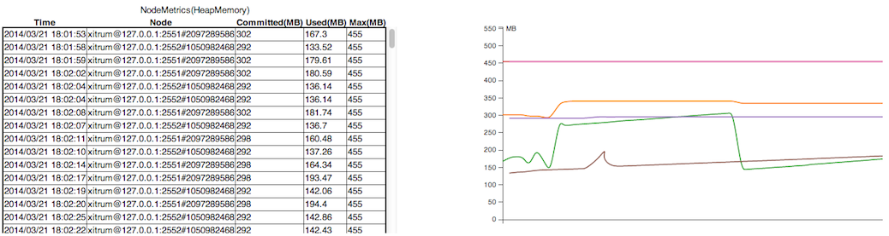
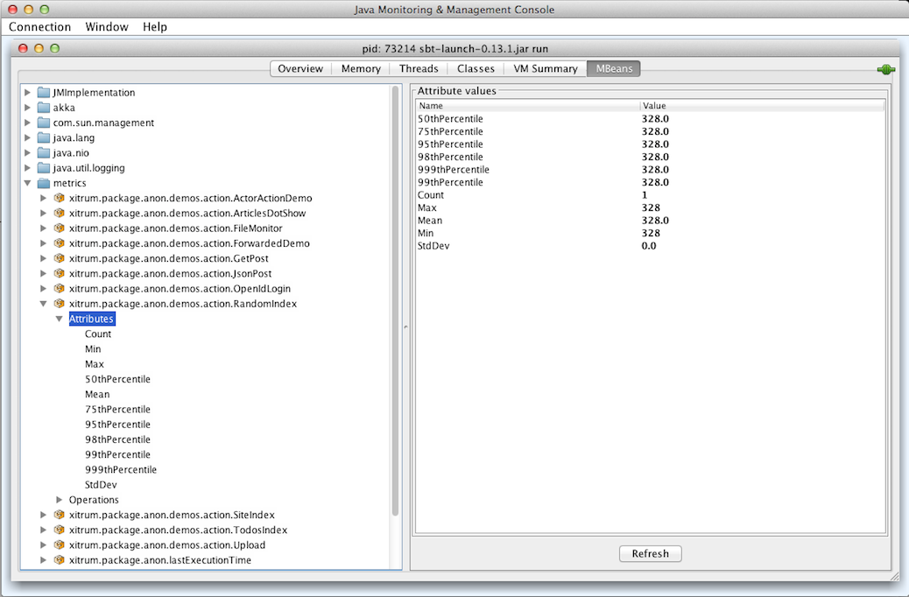
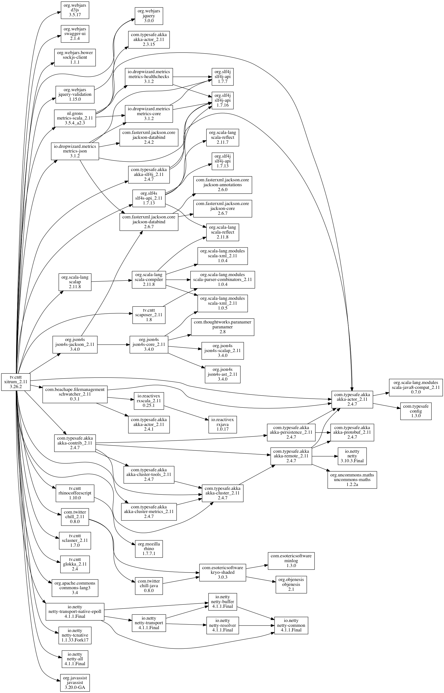

Hướng dẫn sử dụng Xitrum¶
Có cả bản tiếng Anh, Nhật, Hàn Quốc và Nga.
Giới thiệu¶
+--------------------+
| Clients |
+--------------------+
|
+--------------------+
| Netty |
+--------------------+
| Xitrum |
| +----------------+ |
| | HTTP(S) Server | |
| |----------------| |
| | Web framework | | <- Akka, Hazelcast -> Other instances
| +----------------+ |
+--------------------+
| Your app |
+--------------------+
Xitrum là một Scala web framework bất đồng bộ, clustered và cũng là một HTTPS(server) trên nền của Netty và Akka.
Một người dùng Xiturm đã nói rằng:
Wow, đây thực sự là một sản phẩm tuyệt vời, có thể coi như một Scala framework hoàn chỉnh tới mức có thể so sánh với Lift (nhưng dễ sử dụng hơn nhiều).
Xitrum một web framework full-stack đúng nghĩa, đáp ứng tất cả các chức năng cơ bản của một web framework, ngoài ra còn có những phần mở rộng như ETags, file cache tĩnh, công cụ nén Gzip tự động. Tích hợp công cụ chuyển đổi JSON, before/around/after interceptors, request/session/cookie/flash scopes, các bộ chuẩn hóa input tích hợp ở cả server và client, tích hợp cả tính năng cache (Hazelcast), tính năng đa ngôn ngữ i18n theo phong cách GNU gettext, Netty (nhanh không kém Nginx), v.v . Và bạn có thể sử dụng nhiều tính năng khác nữa.
Tính năng¶
- Typesafe, dựa trên tinh thần của Scala. Tất cả các APIs đều được thiết kế an toàn nhất có thể
- Bất đồng bộ, theo tinh thần của Netty. Việc xử lý các yêu cầu (request) không cần phải đáp ứng (respond) ngay lập lức. Long polling, chunked response (streaming), WebSocket, và SockJS.
- Tích hợp sẵn HTTP và HTTPS server có tốc độ nhanh dựa trên Netty (HTTPS có thể sử dụng công nghệ Java hoặc công nghệ mã OpenSSL tự nhiên). Tốc độ phục vụ tập tin tĩnh của Xitrum có thể đạt mức tương đương Nginx.
- Tối ưu hóa cache cả ở phía máy chủ (server) và máy khách (client) để tăng tốc độ đáp ứng. Ở tầng máy chủ web, các tập tin nhỏ được cache vào bộ nhớ, đối với các tập tin lớn thì sử dụng kỹ thuật zero copy của NIO. Ở tầng web framework bạn có thể khai báo cache ở các mức page, action và object theo phong cách Rails framework. Tất cả thủ thuật mà Google khuyên nên dùng để tăng tốc trang web như method GET có điều kiện được áp dụng để cache phía client. Bạn cũng có thể buộc các trình duyệt để luôn gửi yêu cầu đến máy chủ để kiểm tra lại cache trước khi sử dụng.
- Tính năng range request hỗ trợ các tập tin tĩnh. Tính năng này cần cho việc cung cấp dịch vụ video cho điện thoại thông minh. Bạn có thể tạm dừng/tiếp tục việc tải tập tin video.
- Hỗ trợ CORS.
- Tính năng định tuyến được thực hiện tự động trên tinh thần của JAX-RS và Rails Engines. Bạn không cần phải được khai báo ở tất cả các tuyến kết nối tại cùng một điểm mà có thể tại nhiều điểm khác nhau. Tính năng này có thể hiểu như định tuyến một cách phân tán. Bạn có thể cài cắm ứng dụng này vào ứng dụng khác. Nếu bạn có một blog engine, bạn có thể đóng gói nó thành một tập tin JAR và đặt tập tin JAR đó trong một ứng dụng khác, với cách làm như vậy ứng dụng đó sẽ có thêm tính năng blog. Việc định tuyến thì bao gồm 2 chiều: bạn có thể tái tạo đường dẫn URL (reverse routing) một cách an toàn từ action. Bạn có thể tạo tài liệu về các định tuyến bằng cách sử dụng Swagger Doc.
- Các lớp và các đường định tuyến được tải lại một cách tự động trong chế độ phát triển (development mode).
- Các View có thể viết bằng các tập tin mẫu Scalate một các riêng biệt hoặc bằng Scala inline XML. Cả hai cách đều an toàn.
- Phiên làm việc(Sessions) có thể lưu trữ ngay trong cookies(đáp ứng đuợc nhiều user cùng lúc hơn) hoặc lưu trữ bằng Hazelcast (tính bảo mật cao hơn). Hazelcast cũng chạy ngay trong cùng process với việc sử dụng cache phân tán(do đó nhanh hơn và dễ sử dụng hơn) , vì vậy bạn không cần phải có một máy chủ cache riêng biệt. Điều này cũng đúng trong chức năng pubsub của Akka.
- jQuery Validation được tích hợp trong việc chuẩn hóa dữ liệu ở cả máy chủ(server) và máy khách (client)
- i18n theo phong cách GNU gettext. Việc trích các chuổi văn bản ra ngoài để thực hiện dịch được thực hiện tự động, bạn sẽ không cần làm thủ công với properties file. Bạn cũng có thể sử dụng các công cụ mạnh như Poedit để dịch và hợp nhất các bản dịch. gettext, không giống như hầu hết các giải pháp khác, hỗ trợ các định dạng của cả số ít và số nhiều.
Xitrum cố gắng khắc phục các nhược điểm của Scalatra và Lift: mạnh hơn Scalatra và dễ sử dụng hơn Lift. Bạn có thể dễ dàng tạo cả RESTful APIs và postbacks. Xitrum là hệ thống controller-first như Scalatra, không phải là view-first như Lift. Đa số mọi người đã quen thuộc với phong cách controller-first.
Hãy xem các dự án liên quan để có được danh sách các bản demos, plugins v.v.
Đóng góp¶
Xitrum là một framework mã nguồn mở, mã nguồn của Xitrum có thể tìm thấy tại đây, bạn có thể tham gia vào Google group của chúng tôi.
Những người đóng góp dưới đây được xếp theo thứ tự đóng góp đầu tiên của họ.
(*): Hiện tại là thành viên hoạt động chính.
Hướng dẫn¶
Chương này giới thiệu ngắn gọn cách tạo và chạy một project Xitrum. Việc tạo project được thực hiện với giả định bạn sử dụng Linux và đã cài Java.
Tạo một project Xitrum mới¶
Để tạo mới một project Xitrum bạn chỉ cần tải về tập tin xitrum-new.zip:
wget -O xitrum-new.zip https://github.com/xitrum-framework/xitrum-new/archive/master.zip
Hoặc:
curl -L -o xitrum-new.zip https://github.com/xitrum-framework/xitrum-new/archive/master.zip
Khởi động project Xitrum¶
Cách chuẩn nhất để build một project Scala là sử dụng
SBT. Các project mới được tạo đã có sẵn SBT 0.13 trong thư mục sbt. Nếu bạn muốn tự cài đặt SBT, bạn có thể xem hướng dẫn cài đặt.
Sử dụng terminal, chuyển đến thư mục của project mới tạo và chạy lệnh sbt/sbt run:
unzip xitrum-new.zip
cd xitrum-new
sbt/sbt run
Câu lệnh này sẽ download tất cả dependencies, biên dịch toàn bộ project,
và khởi động web server qua class quickstart.Boot. Trong cửa sổ dòng lệnh Terminal,
bạn sẽ thấy tất cả các định tuyến:
[INFO] Load routes.cache or recollect routes...
[INFO] Normal routes:
GET / quickstart.action.SiteIndex
[INFO] SockJS routes:
xitrum/metrics/channel xitrum.metrics.XitrumMetricsChannel websocket: true, cookie_needed: false
[INFO] Error routes:
404 quickstart.action.NotFoundError
500 quickstart.action.ServerError
[INFO] Xitrum routes:
GET /webjars/swagger-ui/2.0.17/index xitrum.routing.SwaggerUiVersioned
GET /xitrum/xitrum.js xitrum.js
GET /xitrum/metrics/channel xitrum.sockjs.Greeting
GET /xitrum/metrics/channel/:serverId/:sessionId/eventsource xitrum.sockjs.EventSourceReceive
GET /xitrum/metrics/channel/:serverId/:sessionId/htmlfile xitrum.sockjs.HtmlFileReceive
GET /xitrum/metrics/channel/:serverId/:sessionId/jsonp xitrum.sockjs.JsonPPollingReceive
POST /xitrum/metrics/channel/:serverId/:sessionId/jsonp_send xitrum.sockjs.JsonPPollingSend
WEBSOCKET /xitrum/metrics/channel/:serverId/:sessionId/websocket xitrum.sockjs.WebSocket
POST /xitrum/metrics/channel/:serverId/:sessionId/xhr xitrum.sockjs.XhrPollingReceive
POST /xitrum/metrics/channel/:serverId/:sessionId/xhr_send xitrum.sockjs.XhrSend
POST /xitrum/metrics/channel/:serverId/:sessionId/xhr_streaming xitrum.sockjs.XhrStreamingReceive
GET /xitrum/metrics/channel/info xitrum.sockjs.InfoGET
WEBSOCKET /xitrum/metrics/channel/websocket xitrum.sockjs.RawWebSocket
GET /xitrum/metrics/viewer xitrum.metrics.XitrumMetricsViewer
GET /xitrum/metrics/channel/:iframe xitrum.sockjs.Iframe
GET /xitrum/metrics/channel/:serverId/:sessionId/websocket xitrum.sockjs.WebSocketGET
POST /xitrum/metrics/channel/:serverId/:sessionId/websocket xitrum.sockjs.WebSocketPOST
[INFO] HTTP server started on port 8000
[INFO] HTTPS server started on port 4430
[INFO] Xitrum started in development mode
Khi khởi động, tất cả các định tuyến (routers) sẽ được kiểm tra và lưu vào log. Bạn đã có luôn danh sách các định tuyến (routers), điều này rất thuận tiện với bạn để viết tài liệu về RESTful APIs của ứng dụng web cho bên thứ 3.
Truy cập đến đường dẫn http://localhost:8000/ hoặc https://localhost:4430/ bằng trình duyệt web. Trong cửa sổ dòng lệnh bạn sẽ thấy thông tin của các yêu cầu (request):
[INFO] GET quickstart.action.SiteIndex, 1 [ms]
Import một project Xitrum vào Eclipse¶
Bạn có thể sử dụng Eclipse để viết code Scala.
Sử dụng cửa sổ dòng lệnh và từ thư mục của project Xitrum chạy lệnh sau:
sbt/sbt eclipse
file .project cho Eclipse sẽ được tạo với thông tin trong file build.sbt.
Sau đó chạy Eclipse và import project.
Import một project Xitrum vào IntelliJ¶
Bạn cũng có thể sử dụng IntelliJ như Eclipse để viết code.
IntelliJ có Scala plugin rất tốt, chỉ cần mở project SBT là xong, không cần tạo trước project file như trường hợp Eclipse ở trên.
Nạp lại tự động (Autoreload)¶
Bạn có thể thiết lập nạp lại tự động các tập tin .class (hot swap) mà không cần phải khởi động lại chương trình. Tuy nhiên, để tránh gặp phải các vấn đề về hiệu suất cũng như tính ổn định của chương trình, bạn chỉ nên thiết lập nạp lại tự động các tập tin .class trong quá trình phát triển (development mode).
Chạy project với IDEs¶
Trong quá trình phát triển, khi chạy project với các IDE cấp cao như Eclipse hoặc IntelliJ, code sẽ được tự động nạp lại bởi thiết lập mặc định của IDE.
Chạy project với SBT¶
Khi bạn chạy project với SBT, bạn cần phải mở 2 cửa sổ dòng lệnh:
- Một để chạy
sbt/sbt run. Câu lệnh này để chạy chương trình và tải lại các tập .class khi chúng được thay đổi. - Một để chạy
sbt/sbt ~compile. Mỗi khi bạn thay đổi các file mã nguồn, câu lệnh này sẽ biên dịch mã nguồn thành các file .class.
Thư mục sbt có chứa một tập tin là agent7.jar.
Tập tin này chịu trách nhiệm tải lại các tập tin .class trong thư mục hiện hành (và các thư mục con).
Nếu nhìn vào đoạn mã sbt/sbt, bạn sẽ thấy tùy chọn -javaagent:agent7.jar.
DCEVM¶
Thông thường JVM chỉ cho phép thay đổi nội dung của một method. Bạn có thể sử dụng DCEVM, một biến thể mã nguồn mở của máy ảo Java HotSpot VM cho phép bạn định nghĩa lại không hạn chế các class đã được tải.
Bạn có thể cài DCEVM bằng 2 cách:
- Sử dụng bản Patch với bản Java đã được cài đặt sẵn trên máy của bạn.
- Cài đặt một bản prebuilt (cách dễ dàng hơn).
Nếu bạn chọn cách sử dụng Patch:
- Bạn có thể kích hoạt DCEVM chạy vĩnh viễn.
- Hoặc sử dụng JVM thay thế (“alternative” JVM). Trong trường hợp này, để chạy DCEVM bạn cần chạy câu lệnh
javavới tùy chọn-XXaltjvm=dcevm. Ví dụ, bạn cần thêm tùy chọn-XXaltjvm=dcevmvào câu lệnhsbt/sbt.
Nếu bạn sử dụng IDE như Eclipse hoặc IntelliJ, bạn cần thiết lập IDE để sử dụng DCEVM (mà không phải JVM mặc định) để chạy project.
Nếu bạn sử dụng SBT, bạn cần cài đặt biến môi trường PATH với đường dẫn câu lệnh java từ DCEVM (không phải bản JVM mặc định). Bạn vẫn có thể cần đến javaagent trên đây, bởi vì mặc dù DCEVM hỗ trợ các tiện ích khi sửa đổi class, bản thân nó không thể tự tải lại các class.
Để có thêm thông tin chi tiết bạn có thể tham khảo DCEVM - A JRebel free alternative.
Action and view¶
Để linh hoạt, Xitrum cung cấp 3 loại actions sau:
Action thông thường, FutureAction, và ActorAction.
Action thông thường¶
import xitrum.Action
import xitrum.annotation.GET
@GET("hello")
class HelloAction extends Action {
def execute() {
respondText("Hello")
}
}
Bởi vì các action sẽ chạy trực tiếp trên luồng (thread) IO của Netty nên các action không nên tốn thời gian xử lý (block process), mặt khác nếu thời gian xử lý của thread IO của Netty kéo dài, Netty sẽ không còn khả năng đáp ứng các yêu cầu từ phía client hoặc không thể tiếp nhận các kết nối mới.
FutureAction¶
import xitrum.FutureAction
import xitrum.annotation.GET
@GET("hello")
class HelloAction extends FutureAction {
def execute() {
respondText("hi")
}
}
FutureAction sẽ chạy trong cùng thread pool với ActorAction dưới đây, được tách
ra từ một phần của Netty thread pool.
Actor action¶
Nếu vạn muốn action của bạn hoạt động như một Akka actor, hãy kế thừa nó từ ActorAction:
import scala.concurrent.duration._
import xitrum.ActorAction
import xitrum.annotation.GET
@GET("actor")
class HelloAction extends ActorAction {
def execute() {
// See Akka doc about scheduler
import context.dispatcher
context.system.scheduler.scheduleOnce(3 seconds, self, System.currentTimeMillis())
// See Akka doc about "become"
context.become {
case pastTime =>
respondInlineView(s"It's $pastTime Unix ms 3s ago.")
}
}
}
Một actor instance sẽ được tạo khi có một yêu cầu (request), actor sẽ được dừng khi
đóng kết nối hoặc response được gửi bởi các method respondText, respondView, v.v.
Với chunked response, actor sẽ không dừng lại ngay lập tức mà dừng lại khi chunk cuối cùng
được gửi đi.
Actor này sẽ chạy trong thread pool của Akka actor có tên là “xitrum”
Gửi Respond cho client¶
Từ một action để trả về một respond cho phía client bạn có thể sử dụng những method sau:
respondView: trả về một tệp view , có hoặc không có layoutrespondInlineView: trả về một được nhúng (không phải một tệp riêng lẻ), có hoặc không có layoutrespondText("hello"): trả về một chuỗi ký tự không có layoutrespondHtml("<html>...</html>"): như trên, với content type là “text/html”respondJson(List(1, 2, 3)): chuyển đối tượng (object) Scala thành đối tượng JSON và trả về client.respondJs("myFunction([1, 2, 3])")respondJsonP(List(1, 2, 3), "myFunction"): kết hợp của 2 loại trên.respondJsonText("[1, 2, 3]")respondJsonPText("[1, 2, 3]", "myFunction")respondBinary: trả về một mảng byterespondFile: gửi file trực tiếp từ đĩa một cách nhanh chóng bằng kỹ thuật zero-copy (aka send-file)respondEventSource("data", "event")gửi chunk respond
Gửi trả một view file¶
- Mỗi action có thể liên kết với Scalate
- view file. Thay vì gửi tra trực tiếp ngay trong action với các method trên đây, bạn có
thể sử dụng một view file riêng biệt.
scr/main/scala/mypackage/MyAction.scala:
package mypackage
import xitrum.Action
import xitrum.annotation.GET
@GET("myAction")
class MyAction extends Action {
def execute() {
respondView()
}
def hello(what: String) = "Hello %s".format(what)
}
scr/main/scalate/mypackage/MyAction.jade:
- import mypackage.MyAction
!!! 5
html
head
!= antiCsrfMeta
!= xitrumCss
!= jsDefaults
title Welcome to Xitrum
body
a(href={url}) Path to the current action
p= currentAction.asInstanceOf[MyAction].hello("World")
!= jsForView
xitrumCssbao gồm các tệp CSS mặc định cho Xitrum. Bạn có thể xóa nó nếu bạn không muốn sử dụng xitrum-framework.jsDefaultsbao gồm các jQuery, jQuery Validate plugin, v.v, bạn nên đặt nó trong thẻ <head>jsForViewbao gồm các đoạn mã JavaScript thêm bởijsAddToView, nên đặt ở phần cuối.
Trong bạn có thể sử dụng các method của class xitrum.Action.
Không những thế bạn có thể sử dụng các utility methods cung cấp bởi Scalate điển hình như unescape.
Xem thêm Scalate doc.
mặc định của Scalate là Jade.
Bạn cũng có thể sử dụng Mustache, Scaml, hoặc Ssp.
Để cấu hình cho mặc định, bạn có thể xem xitrum.conf tại thư mục config trong ứng dụng Xitrum
Bạn cũng có thể override mặc định bằng cách truyền các giá trị “jade”, “mustache”, “scaml”,hoặc “ssp” vào tham số “type” trong method respondView.
val options = Map("type" ->"mustache")
respondView(options)
Ép kiểu cho currentAction¶
Nếu bạn muốn có chính xác instance của action hiện thời, bạn có thể ép kiểu cho (casting) currentAction thành action mà bạn mong muốn.
p= currentAction.asInstanceOf[MyAction].hello("World")
Nếu bạn có có nhiều dòng code như dưới đây, bạn chỉ cần ép kiểu một lần duy nhất:
- val myAction = currentAction.asInstanceOf[MyAction]; import myAction._
p= hello("World")
p= hello("Scala")
p= hello("Xitrum")
Mustache¶
Các tài liệu tham khảo cho Mustache:
Bạn không thể làm một vài điều với Mustache như với Jade bởi vì cú pháp của Mustache khá cứng nhắc và cần tuân thủ nghiêm ngặt.
Để truyền tham số từ action vào của Mustache bạn phải sử dụng method at:
Action:
at("name") = "Jack"
at("xitrumCss") = xitrumCss
Mustache :
My name is {{name}}
{{xitrumCss}}
Ghi nhớ rằng bạn không thể sử dụng các từ khóa dưới đây cho method at để truyền tham số cho Scalate , bởi vì chúng đã được sử dụng từ trước.
- “context”: dùng cho đối tượng (object) Sclate utility, đối tượng này đã bao gồm các method như
unescape - “helper”: sử dụng cho đối tượng current action
CoffeeScript¶
Bạn có thể nhúng CoffeeScript trong Scalate bằng cách sử dụng: :coffeescript filter:
body
:coffeescript
alert "Hello, Coffee!"
Output:
<body>
<script type='text/javascript'>
//<![CDATA[
(function() {
alert("Hello, Coffee!");
}).call(this);
//]]>
</script>
</body>
Nhưng bạn cũng nhớ rằng việc sử dụng chúng tốn thời gian:
jade+javascript+1thread: 1-2ms for page
jade+coffesscript+1thread: 40-70ms for page
jade+javascript+100threads: ~40ms for page
jade+coffesscript+100threads: 400-700ms for page
Để tăng tốc độ bạn có thể generate CoffeeScript trước JavaScript.
Layout¶
Khi bạn gửi trả một view với respondView hoặc respondInlineView, Xitrum sẽ chuyển nó thành một String, và đặt String đó trong biến renderedView. Xitrum sau đó sẽ gọi đến method layout của current action, cuối cùng Xitrum sẽ gửi trả kết quả của method này về trình duyệt web.
Mặc định, medthod layout sẽ tự trả về renderedView. Nếu bạn muốn trang trí cho view bạn cần override method này. Nếu bạn include renderView trong method này, view sẽ bao gồm các phần trong layout của bạn.
Điểm mấu chốt ở đây là layout được gọi sau khi action view của bạn hiện lên, và trong mọi trường hợp đều trả về trình duyệt một kết quả. Kỹ thuật này khá đơn giản và rõ ràng. Nói một cách dễ hiểu hơn, bạn có thể nghĩ rằng sẽ không có một layout nào trong Xitrum. Tất cả chỉ xoay quanh method layout và bạn có thể làm bất cứ điều gì với method này.
Thông thường, bạn tạo một class cha bao gồm các layout chung:
src/main/scala/mypackage/AppAction.scala
package mypackage
import xitrum.Action
trait AppAction extends Action {
override def layout = renderViewNoLayout[AppAction]()
}
src/main/scalate/mypackage/AppAction.jade
!!! 5
html
head
!= antiCsrfMeta
!= xitrumCss
!= jsDefaults
title Welcome to Xitrum
body
!= renderedView
!= jsForView
src/main/scala/mypackage/MyAction.scala
package mypackage
import xitrum.annotation.GET
@GET("myAction")
class MyAction extends AppAction {
def execute() {
respondView()
}
def hello(what: String) = "Hello %s".format(what)
}
scr/main/scalate/mypackage/MyAction.jade:
- import mypackage.MyAction
a(href={url}) Path to the current action
p= currentAction.asInstanceOf[MyAction].hello("World")
Sử dụng layout không dùng tệp riêng biệt:¶
AppAction.scala
import xitrum.Action
import xitrum.view.DocType
trait AppAction extends Action {
override def layout = DocType.html5(
<html>
<head>
{antiCsrfMeta}
{xitrumCss}
{jsDefaults}
<title>Welcome to Xitrum</title>
</head>
<body>
{renderedView}
{jsForView}
</body>
</html>
)
}
Truyền trực tiếp layout đến method respondView¶
val specialLayout = () =>
DocType.html5(
<html>
<head>
{antiCsrfMeta}
{xitrumCss}
{jsDefaults}
<title>Welcome to Xitrum</title>
</head>
<body>
{renderedView}
{jsForView}
</body>
</html>
)
respondView(specialLayout _)
Inline view¶
Thông thường, bạn viết view trong một tệp Scalate, ạn cũng có thể viết chúng trực tiếp như sau:
import xitrum.Action
import xitrum.annotation.GET
@GET("myAction")
class MyAction extends Action {
def execute() {
val s = "World" // Will be automatically HTML-escaped
respondInlineView(
<p>Hello <em>{s}</em>!</p>
)
}
}
Render fragment¶
Giả sử tệp MyAction.jade có đường dẫn: scr/main/scalate/mypackage/MyAction.jade
Nếu bạn muốn tạo tệp fragment trong cùng thư mục: scr/main/scalate/mypackage/_MyFragment.jade
renderFragment[MyAction]("MyFragment")
Nếu MyAction là current action, bạn có thể bỏ qua:
renderFragment("MyFragment")
Trả về view cho action khác¶
Sử dụng cú pháp respondView[ClassName]():
package mypackage
import xitrum.Action
import xitrum.annotation.{GET, POST}
@GET("login")
class LoginFormAction extends Action {
def execute() {
// Respond scr/main/scalate/mypackage/LoginFormAction.jade
respondView()
}
}
@POST("login")
class DoLoginAction extends Action {
def execute() {
val authenticated = ...
if (authenticated)
redirectTo[HomeAction]()
else
// Reuse the view of LoginFormAction
respondView[LoginFormAction]()
}
}
Một action - nhiều view¶
Nếu bạn muốn có nhiều view cho một action:
package mypackage
import xitrum.Action
import xitrum.annotation.GET
// These are non-routed actions, for mapping to view files:
// scr/main/scalate/mypackage/HomeAction_NormalUser.jade
// scr/main/scalate/mypackage/HomeAction_Moderator.jade
// scr/main/scalate/mypackage/HomeAction_Admin.jade
trait HomeAction_NormalUser extends Action
trait HomeAction_Moderator extends Action
trait HomeAction_Admin extends Action
@GET("")
class HomeAction extends Action {
def execute() {
val userType = ...
userType match {
case NormalUser => respondView[HomeAction_NormalUser]()
case Moderator => respondView[HomeAction_Moderator]()
case Admin => respondView[HomeAction_Admin]()
}
}
}
Sử dụng các non-routed action như trên khá phức tạp, nhưng đó là cách typesafe.
Bạn cũng có thể sử dụng ``String``để chỉ ra đường dẫn đến :
respondView("mypackage/HomeAction_NormalUser")
respondView("mypackage/HomeAction_Moderator")
respondView("mypackage/HomeAction_Admin")
Component¶
Bạn có thể tạo và tái sử dụng các component của view. Về cơ bản, một component gần giống với một action và có các tính chất sau:
- Component không có route, do đó không cần đến method
execute. - Component không trả về một respond hoàn chỉnh, Component chỉ
renderra các fragment của view. Do đó trong một component, thay vì sử dụngrepondXXX, bạn hãy sử dụngrenderXXX. - Giống với một action, một component có thể không có, có một, hoặc có nhiều view liên kết với nhau.
package mypackage
import xitrum.{FutureAction, Component}
import xitrum.annotation.GET
class CompoWithView extends Component {
def render() = {
// Render associated view , e.g. CompoWithView.jade
// Note that this is renderView, not respondView!
renderView()
}
}
class CompoWithoutView extends Component {
def render() = {
"Hello World"
}
}
@GET("foo/bar")
class MyAction extends FutureAction {
def execute() {
respondView()
}
}
MyAction.jade:
- import mypackage._
!= newComponent[CompoWithView]().render()
!= newComponent[CompoWithoutView]().render()
RESTful APIs¶
Bạn có thể tạo RESTful APIs cho ứng dụng trên iPhone,Android v.v một cách rất dễ dàng.
import xitrum.Action
import xitrum.annotation.GET
@GET("articles")
class ArticlesIndex extends Action {
def execute() {...}
}
@GET("articles/:id")
class ArticlesShow extends Action {
def execute() {...}
}
Tương tự cho các method POST, PUT, PATCH, DELETE, và OPTIONS. Xitrum tự động kiểm soát phần HEAD như như một method GET với phần response body rỗng.
Với các HTTP client như các trình duyệt web thông thường không hỗ trợ method PUT và DELETE, để mô phỏng PUT và DELETE, sử dụng thủ thuật gửi một method PÓST với _method=put hoặc _method=delete trong request body.
Khi các ứng dụng web được khởi chạy, Xitrum sẽ quét tất cả các annotation, xây dựng bảng định tuyến và ghi ra out put để thông báo cho bạn biết bạn có APIs nào:
[INFO] Routes:
GET /articles quickstart.action.ArticlesIndex
GET /articles/:id quickstart.action.ArticlesShow
Các Route được tự động gom lại theo tinh thần của JAX-RS và Rails Engines. Bạn không cần khai báo tất cả các route tại cùng một nơi. Hãy nghĩ về tính năng nay tương tự như distributed route. Bạn có thể sử dụng một ứng dụng trong một ứng dụng khác. Nếu bạn có một blog engine, bạn có thể đóng gói nó thành một tập tin JAR và đặt tập tin JAR đó trong một ứng dụng khác, với cách làm như vậy ứng dụng đó sẽ có thêm tính năng blog. Việc định tuyến thì bao gồm 2 chiều: bạn có thể tái tạo đường dẫn URL (reverse routing) một cách an toàn từ action. Bạn có thể tạo tài liệu về các định tuyến bằng cách sử dụng Swagger Doc.
Route cache¶
Để khởi động nhanh hơn, route được cache trong file routes.cache.
Trong quá trình phát triển, các route trong các tệp *.class tại thư mục target sẽ không được cache. Nếu bạn thực hiện cập nhất các thư viện phụ thuộc có chứa route, bạn có thể cần phải xóa tệp routes.cache. Tệp này không nên được commit đến kho mã nguồn.
Mức độ ưu tiên của các route (first, last)¶
; Nếu bạn muốn các route như sau:
/articles/:id --> ArticlesShow
/articles/new --> ArticlesNew
Bạn phải chắc chắn rằng route thứ 2 sẽ được kiểm tra trước.
Annotation @First sẽ được thêm vào:
import xitrum.annotation.{GET, First}
@GET("articles/:id")
class ArticlesShow extends Action {
def execute() {...}
}
@First // This route has higher priority than "ArticlesShow" above
@GET("articles/new")
class ArticlesNew extends Action {
def execute() {...}
}
Last is similar.
Nhiều đường dẫn cho một action¶
@GET("image", "image/:format")
class Image extends Action {
def execute() {
val format = paramo("format").getOrElse("png")
// ...
}
}
Dot trong route¶
@GET("articles/:id", "articles/:id.:format")
class ArticlesShow extends Action {
def execute() {
val id = param[Int]("id")
val format = paramo("format").getOrElse("html")
// ...
}
}
Xử lý các phần còn lại của route¶
Kí tự đặc biệt / không được phép có mặt trong tên của parameter. Nếu bạn muốn sử dụng kí tự này, parameter phải được đặt cuối cùng và bạn phải sử dụng nó như dưới đây:
GET("service/:id/proxy/:*")
Đường dẫn dưới đây sẽ xuất hiện:
/service/123/proxy/http://foo.com/bar
để lấy ra phần *:
val url = param("*") // Will be "http://foo.com/bar"
Liên kết đến một action¶
Để bảo toàn tính typesafe của Xitrum, bạn không nên sử dụng URL một cách thủ công, hãy sử dụng các dưới đây:
<a href={url[ArticlesShow]("id" -> myArticle.id)}>{myArticle.title}</a>
Redirect đến một action khác¶
Đọc thêm để biết redirection là gì.
import xitrum.Action
import xitrum.annotation.{GET, POST}
@GET("login")
class LoginInput extends Action {
def execute() {...}
}
@POST("login")
class DoLogin extends Action {
def execute() {
...
// After login success
redirectTo[AdminIndex]()
}
}
GET("admin")
class AdminIndex extends Action {
def execute() {
...
// Check if the user has not logged in, redirect him to the login page
redirectTo[LoginInput]()
}
}
Bạn cũng có thể redirect đến action hiện tại (current action) với method redirectToThis().
Forward đến action khác¶
Sử dụng method forwardTo[AnotherAction](). Nếu bạn sử dụng method redirectTo ở trên đây, trình duyệt sẽ tạo một request khác, trong khi đó method forwardTo thì không.
Xác định Ajax request¶
Sử dụng method isAjax.
// In an action
val msg = "A message"
if (isAjax)
jsRender("alert(" + jsEscape(msg) + ")")
else
respondText(msg)
Anti-CSRF¶
Với các requests, Xitrum mặc định bảo vệ ứng dụng web của bạn khỏi kỹ thuật tấn công Giả mạo Cross-site request.
Khi bạn incluede antiCsrfMeta trong layout của bạn:
import xitrum.Action
import xitrum.view.DocType
trait AppAction extends Action {
override def layout = DocType.html5(
<html>
<head>
{antiCsrfMeta}
{xitrumCss}
{jsDefaults}
<title>Welcome to Xitrum</title>
</head>
<body>
{renderedView}
{jsForView}
</body>
</html>
)
}
Thẻ <head> sẽ tưong tự như sau:
<!DOCTYPE html>
<html>
<head>
...
<meta name="csrf-token" content="5402330e-9916-40d8-a3f4-16b271d583be" />
...
</head>
...
</html>
Các token sẽ được tự động include trong tất cả các non-GET Ajax requests như X-CSRF-Token header gửi bởi jQuery nếu bạn include xitrum.js trong view template. xitrum.js được include trong jsDefaults. Nếu bạn không sử dụng jsDefaults, bạn có thể include xitrum.js trong template như sau:
<script type="text/javascript" src={url[xitrum.js]}></script>
antiCsrfInput và antiCsrfToken¶
Xitrum lây CSRF token từ X-CSRF-Token request header. Nếu header không tồn tại, Xitrum sẽ lấy token từ parameter csrf-token tại request body (chú ý: không phải parameter trong URL).
Nếu bạn tự tạo form, và bạn không sử dụng thẻ meta và xitrum.js như đã trình bày ở trên, bạn cần sử dụng antiCsrfInput hoặc antiCsrfToken:
form(method="post" action={url[AdminAddGroup]})
!= antiCsrfInput
form(method="post" action={url[AdminAddGroup]})
input(type="hidden" name="csrf-token" value={antiCsrfToken})
SkipCsrfCheck¶
Khi bạn tạo các APIs cho thiết bị, ví dụ điện thoại thông minh, bạn có thể muốn bỏ qua việc tự động kiểm tra CSRS. Thêm trait xitrum.SkipCsrfCheck vào action của bạn:
import xitrum.{Action, SkipCsrfCheck}
import xitrum.annotation.POST
trait Api extends Action with SkipCsrfCheck
@POST("api/positions")
class LogPositionAPI extends Api {
def execute() {...}
}
@POST("api/todos")
class CreateTodoAPI extends Api {
def execute() {...}
}
Kiểm soát các route¶
Khi khởi động Xitrum sẽ tự động gom các route lại. Nếu bạn muốn điều khiển các route, bạn có thể sử dụng xitrum.Config.routes.
Ví dụ:
import xitrum.{Config, Server}
object Boot {
def main(args: Array[String]) {
// You can modify routes before starting the server
val routes = Config.routes
// Remove routes to an action by its class
routes.removeByClass[MyClass]()
if (demoVersion) {
// Remove routes to actions by a prefix
routes.removeByPrefix("premium/features")
// This also works
routes.removeByPrefix("/premium/features")
}
...
Server.start()
}
}
Lấy tất cẩ các request content¶
Thông thường, nếu request content không phải là application/x-www-form-urlencoded, bạn có thể cần phải lấy tất cả các request content (và tự phân tích chúng).
Để lấy ra một chuối ký tự (string):
val body = requestContentString
Để lấy ra một string và phân tích chúng thành JSON:
val myJValue = requestContentJValue // => JSON4S (http://json4s.org) JValue
val myMap = xitrum.util.SeriDeseri.fromJValue[Map[String, Int]](myJValue)
Nếu bạn muốn kiểm soát toàn bộn, sử dụng request.getContent. Nó sẽ trả về một ByteBuf.
Viết tài liệu API với Swagger¶
Bạn có thể viết tài liệu cho API của bạn với Swagger. Thêm annotation @Swagger vào action cần được viết tài liệu.
Xitrum sẽ generate /xitrum/swagger.json.
Tệp này có thể sử dụng với Swagger UI để tạo giao diện cho tài liệu của API.
Xitrum đã bao gồm Swagger UI. Sử dụng chúng tại đường dẫn ``/xitrum/swagger-ui` của chưong trình của bạn. Ví dụ http://localhost:8000/xitrum/swagger-ui.

Bạn có thể xem một ví dụ:
import xitrum.{Action, SkipCsrfCheck}
import xitrum.annotation.{GET, Swagger}
@Swagger(
Swagger.Tags("image", "APIs to create images"),
Swagger.Description("Dimensions should not be bigger than 2000 x 2000"),
Swagger.OptStringQuery("text", "Text to render on the image, default: Placeholder"),
Swagger.Produces("image/png"),
Swagger.Response(200, "PNG image"),
Swagger.Response(400, "Width or height is invalid or too big")
)
trait ImageApi extends Action with SkipCsrfCheck {
lazy val text = paramo("text").getOrElse("Placeholder")
}
@GET("image/:width/:height")
@Swagger( // <-- Inherits other info from ImageApi
Swagger.Summary("Generate rectangle image"),
Swagger.IntPath("width"),
Swagger.IntPath("height")
)
class RectImageApi extends Api {
def execute {
val width = param[Int]("width")
val height = param[Int]("height")
// ...
}
}
@GET("image/:width")
@Swagger( // <-- Inherits other info from ImageApi
Swagger.Summary("Generate square image"),
Swagger.IntPath("width")
)
class SquareImageApi extends Api {
def execute {
val width = param[Int]("width")
// ...
}
}
JSON cho Swagger sẽ được tạo khi bạn sử dụng /xitrum/swagger.
Swagger UI sử dụng JSON dưới đây để tạo giao diện cho tài liệu API.
Ngoài các parameter như Swagger.IntPath và Swagger.OptStringQuery còn các tham số sau: BytePath, IntQuery, OptStringForm etc. Chúng ta có thể tạo theo mẫu They are in the form:
<Value type><Param type>(required parameter)Opt<Value type><Param type>(optional parameter)
Kiểu dữ liệu: Byte, Int, Int32, Int64, Long, Number, Float, Double, String, Boolean, Date, DateTime
Kiểu tham số: Path, Query, Body, Header, Form
Đọc thêm về kiểu dữ liệu và kiểu tham số.
Template engines¶
Template engine đã được cấu hình dẽ được gọi khi renderView, renderFragment, hoặc respondView được gọi tới.
Cấu hình template engine¶
Trong tệp config/xitrum.conf, template engine có thể cấu hình theo 2 mẫu dưới dây, phụ thuộc vào engine mà bạn sử dụng:
template = my.template.EngineClassName
Hoặc:
template {
"my.template.EngineClassName" {
option1 = value1
option2 = value2
}
}
Template engine mặc định là xitrum-scalate.
Xóa template engine¶
Nếu bạn chỉ tạo RESTful APIs trong project, thông thường bạn không sử dụng method renderView, renderFragment, hoặc respondView. Trong trường hợp này, bạn còn có thể xóa template engine khỏi porject để project nhẹ hơn. Bạn chỉ cần xóa hoặc comment dòng templateEngine trong tệp config/xitrum.conf.
Sau đó bạn xóa các cấu hình template liên quan khỏi project của bạn.
Tự tạo template engine cho riêng bạn¶
Để tạo template engine cho riêng bạn, tạo một class kế thừa từ xitrum.view.TemplateEngine. Và đặt class này của bạn trong tệp config/xitrum.conf.
Ví dụ, xem xitrum-scalate.
Postbacks¶
Có 2 use case chính của ứng dụng web:
- Để phục vụ các thiết bị: bạn cần tạo các RESTful APIs cho smartphones, web service cho các web site khác.
- Để phục vụ các người dùng cuối: bạn cần tạo giao diện web.
Như một web framework thông thường, Xitrum hướng tới việc hỗ trợ giải quyết các use case một cách dễ dàng. Để giải quyết use case đầu tiền, bạn sử dụng RESTful actions. Để giải quyết use case thứ hai, bạn có thể sử dụng tính năng Ajax form postback của Xitrum. Bạn có thể xem thêm các trang dưới đây để biết thêm về postback:
Tính năng postback của Xitrum có liên hệ tới Nitrogen.
Layout¶
AppAction.scala
import xitrum.Action
import xitrum.view.DocType
trait AppAction extends Action {
override def layout = DocType.html5(
<html>
<head>
{antiCsrfMeta}
{xitrumCss}
{jsDefaults}
<title>Welcome to Xitrum</title>
</head>
<body>
{renderedView}
{jsForView}
</body>
</html>
)
}
Form¶
Articles.scala
import xitrum.annotation.{GET, POST, First}
import xitrum.validator._
@GET("articles/:id")
class ArticlesShow extends AppAction {
def execute() {
val id = param("id")
val article = Article.find(id)
respondInlineView(
<h1>{article.title}</h1>
<div>{article.body}</div>
)
}
}
@First // Force this route to be matched before "show"
@GET("articles/new")
class ArticlesNew extends AppAction {
def execute() {
respondInlineView(
<form data-postback="submit" action={url[ArticlesCreate]}>
<label>Title</label>
<input type="text" name="title" class="required" /><br />
<label>Body</label>
<textarea name="body" class="required"></textarea><br />
<input type="submit" value="Save" />
</form>
)
}
}
@POST("articles")
class ArticlesCreate extends AppAction {
def execute() {
val title = param("title")
val body = param("body")
val article = Article.save(title, body)
flash("Article has been saved.")
jsRedirectTo(show, "id" -> article.id)
}
}
Khi sự kiện submit của JavaScript trong form xảy ra, form sẽ postback về ArticlesCreate.
Thuộc tính action của <form> được tạo ra. URL được mã hóa hoạt động như một anti-CSRF token.
Non-form¶
Postback có thể được đặt trong bất kỳ phần tử nào, không chỉ là form.
Một ví dụ sử dụng link:
<a href="#" data-postback="click" action={postbackUrl[LogoutAction]}>Logout</a>
Khi click vào link ở trên sẽ tạo ra postback đến LogoutAction.
Hộp thoại xác nhận¶
Nếu bạn muốn hiển thị một hộp thoại xác nhận:
<a href="#" data-postback="click"
action={url[LogoutAction]}
data-confirm="Do you want to logout?">Logout</a>
Nếu người dùng click “Cancel”, postback sẽ không được gửi đi.
Thêm parameter khác¶
Với các form element, bạn có thể thêm <input type="hidden"... để gửi thêm các parameter khác với postback.
Với các element khác, bạn làm như sau:
<a href="#"
data-postback="click"
action={url[ArticlesDestroy]("id" -> item.id)}
data-params="_method=delete"
data-confirm={"Do you want to delete %s?".format(item.name)}>Delete</a>
Bạn cũng có thể thêm các parameter trong một form riêng biệt:
<form id="myform" data-postback="submit" action={url[SiteSearch]}>
Search:
<input type="text" name="keyword" />
<a class="pagination"
href="#"
data-postback="click"
data-form="#myform"
action={url[SiteSearch]("page" -> page)}>{page}</a>
</form>
#myform là một jQuery selector để chọn form có chứa các parameter được thêm vào.

XML¶
Scala cho phép viết literal XML. Xitrum sử dụng tính năng này như “template engine”:
- Scala check cú pháp XML khi compile: Các View là typesafe.
- Scala tự động bỏ qua XML: Các view ngăn chặn XSS.
Dưới đây là một vài thủ thuật.
Unescape XML¶
Sử dụng scala.xml.Unparsed:
import scala.xml.Unparsed
<script>
{Unparsed("if (1 < 2) alert('Xitrum rocks');")}
</script>
hoặc sử dụng <xml:unparsed>:
<script>
<xml:unparsed>
if (1 < 2) alert('Xitrum rocks');
</xml:unparsed>
</script>
<xml:unparsed> sẽ được ẩn đi trong output.
<script>
if (1 < 2) alert('Xitrum rocks');
</script>
Các nhóm XML element¶
<div id="header">
{if (loggedIn)
<xml:group>
<b>{username}</b>
<a href={url[LogoutAction]}>Logout</a>
</xml:group>
else
<xml:group>
<a href={url[LoginAction]}>Login</a>
<a href={url[RegisterAction]}>Register</a>
</xml:group>}
</div>
<xml:group> sẽ được ẩn đi trong output, ví dụ khi người dùng thực hiện đăng nhập:
<div id="header">
<b>My username</b>
<a href="/login">Logout</a>
</div>
Render XHTML¶
Xitrum tự động render view và layout như XHTML. Nếu bạn muốn tự render chúng (hiếm khi), chú ý đến các dòng code dưới đây.
import scala.xml.Xhtml
val br = <br />
br.toString // => <br></br>, một vài trình duyệt sẽ render dòng này như 2 thẻ <br />
Xhtml.toXhtml(<br />) // => "<br />"
JavaScript and JSON¶
JavaScript¶
Xitrum đã inlcude jQuery. Có một vài jsXXX helper.
Thêm các đoạn JavaScript vào một view¶
Trong action, gọi method jsAddToView (nhiều lần nếu cần):
class MyAction extends AppAction {
def execute() {
...
jsAddToView("alert('Hello')")
...
jsAddToView("alert('Hello again')")
...
respondInlineView(<p>My view</p>)
}
}
Trong layout, gọi method jsForView:
import xitrum.Action
import xitrum.view.DocType
trait AppAction extends Action {
override def layout = DocType.html5(
<html>
<head>
{antiCsrfMeta}
{xitrumCss}
{jsDefaults}
</head>
<body>
<div id="flash">{jsFlash}</div>
{renderedView}
{jsForView}
</body>
</html>
)
Respond JavaScript trực tiếp không sử dụng view¶
Để respond JavaScript:
jsRespond("$('#error').html(%s)".format(jsEscape(<p class="error">Could not login.</p>)))
Một các trực tiếp:
jsRedirectTo("http://cntt.tv/")
jsRedirectTo[LoginAction]()
JSON¶
Xitrum đã include JSON4S. Bạn có thể đọc thêm để biết các parse và generate ra JSON.
Để convert từ Scala case object thành JSON string và ngược lại:
import xitrum.util.SeriDeseri
case class Person(name: String, age: Int, phone: Option[String])
val person1 = Person("Jack", 20, None)
val json = SeriDeseri.toJson(person1)
val person2 = SeriDeseri.fromJson[Person](json)
Để respond JSON:
val scalaData = List(1, 2, 3) // An example
respondJson(scalaData)
JSON cũng thuận tiện cho các tệp cấu hình cần tới các cấu trúc lồng nhau: Xem Load config files.
Plugin cho Knockout.js¶
Async response¶
Danh sách các method responding thông thường:
respondView: respond tệp view, có hoặc không có layout.respondInlineView: respond template đã được nhúng(không tách rời các tệp template), có hoặc không có layout.respondText("hello"): respond một string, không có layoutrespondHtml("<html>...</html>"): như trên, với content type đặt là “text/html”respondJson(List(1, 2, 3)): convert Scala object thành JSON object sau đó respondrespondJs("myFunction([1, 2, 3])")respondJsonP(List(1, 2, 3), "myFunction"): kết hợp cả 2 method ở trênrespondJsonText("[1, 2, 3]")respondJsonPText("[1, 2, 3]", "myFunction")respondBinary: respond một mảng byterespondFile: send một tệp trực tiếp từ đĩa với tốc độ cao, sử dụng zero-copy (aka send-file)respondEventSource("data", "event")
Xitrum không tự động gửi bất kỳ response nào.
Bạn phải gọi method respondXXX ở trên để gửi response.
Nếu bạn không gọi respondXXX, Xitrum sẽ giữ kết nối HTTP, và bạn có thể
gọi respondXXX sau.
Để kiểm tra kết nối còn mở hay không, gọi channel.isOpen.
Bạn cũng có thể sử dụng addConnectionClosedListener:
addConnectionClosedListener {
// The connection has been closed
// Unsubscribe from events, release resources etc.
}
Vì tính năng async response không được gửi ngay lập tức.
respondXXX trả về
ChannelFuture.
Bạn có thể sử dụng nó để thực hiện action khi response đã thực sự được gửi đi.
Ví dụ, bạn muốn đóng kết nối sau khi response đã được gửi đi:
import io.netty.channel.{ChannelFuture, ChannelFutureListener}
val future = respondText("Hello")
future.addListener(new ChannelFutureListener {
def operationComplete(future: ChannelFuture) {
future.getChannel.close()
}
})
hoặc ngắn hơn:
respondText("Hello").addListener(ChannelFutureListener.CLOSE)
WebSocket¶
import scala.runtime.ScalaRunTime
import xitrum.annotation.WEBSOCKET
import xitrum.{WebSocketAction, WebSocketBinary, WebSocketText, WebSocketPing, WebSocketPong}
@WEBSOCKET("echo")
class EchoWebSocketActor extends WebSocketAction {
def execute() {
// Here you can extract session data, request headers etc.
// but do not use respondText, respondView etc.
// To respond, use respondWebSocketXXX like below.
log.debug("onOpen")
context.become {
case WebSocketText(text) =>
log.info("onTextMessage: " + text)
respondWebSocketText(text.toUpperCase)
case WebSocketBinary(bytes) =>
log.info("onBinaryMessage: " + ScalaRunTime.stringOf(bytes))
respondWebSocketBinary(bytes)
case WebSocketPing =>
log.debug("onPing")
case WebSocketPong =>
log.debug("onPong")
}
}
override def postStop() {
log.debug("onClose")
super.postStop()
}
}
Một actor sẽ được tạo khi có một request. Actor sẽ được dừng lại khi một trong các điều kiện sau xảy ra:
- Kết nối bị đóng.
- WebSocket close frame được nhận hoặc gửi đi
Sử dụng các method sau để gửi WebSocket frames:
respondWebSocketTextrespondWebSocketBinaryrespondWebSocketPingrespondWebSocketClose
Không có respondWebSocketPong, vì Xitrum sẽ tự động gửi pong frame khi nó nhận được ping frame.
Để lấy URL cho WebSocket action ở trên:
// Probably you want to use this in Scalate view etc.
val url = absWebSocketUrl[EchoWebSocketActor]
SockJS¶
SockJS là một thư viện trình duyệt JavaScript cung cấp một WebSocket-like object, dành cho các trình duyệt không hỗ trợ WebSocket. Đầu tiên SockJS thử sử dụng WebSocket. Nếu không thành công, nó có thể sử dụng một số cách nhưng vẫn đưa về sử dụng WebSocket-like object.
Nếu bạn muốn làm việc với WebSocket API trên mọi trình duyệt, bạn nên sử dụng SockJS và tránh sử dụng trực tiếp WebSocket directly.
<script>
var sock = new SockJS('http://mydomain.com/path_prefix');
sock.onopen = function() {
console.log('open');
};
sock.onmessage = function(e) {
console.log('message', e.data);
};
sock.onclose = function() {
console.log('close');
};
</script>
Xitrum bao gồm các tệp JavaScript của SockJS. Trong view template, chỉ cần viết như sau:
...
html
head
!= jsDefaults
...
SockJS đòi hỏi một server counterpart. Xitrum sẽ tự động cung cấp.
import xitrum.{Action, SockJsAction, SockJsText}
import xitrum.annotation.SOCKJS
@SOCKJS("echo")
class EchoSockJsActor extends SockJsAction {
def execute() {
// To respond, use respondSockJsXXX like below
log.info("onOpen")
context.become {
case SockJsText(text) =>
log.info("onMessage: " + text)
respondSockJsText(text)
}
}
override def postStop() {
log.info("onClose")
super.postStop()
}
}
Một actor sẽ được tạo khi có một SockJS session mới. Nó sẽ dừng lại khi SockJS session này đóng lại.
Sử dụng các method sau để gửi các send SockJS frames:
respondSockJsTextrespondSockJsClose
Xem Various issues and design considerations:
Về cơ bản, cookie không phù hợp với mô hình SockJS. Nếu bạn muốn authorize cho một
session, cũng cấp một token đặc biệt trên một page, gửi chúng như những thứ đầu tiên
qua kết nối SockJS và validate nó ở server. Về cơ bản thì đây là cách thức hoạt động của
cookie
Để cấu hình SockJS clustering, xem Clustering với Akka.
Chunked response¶
Để gửi chunked response:
- Gọi
setChunked - Gọi
respondXXXbao nhiêu lần bạn muốn - Cuối cùng, gọi
respondLastChunk
Chunked response có nhiều use cases. Ví dụ, khi bạn cần generate một tệp CSV lớn hơn bộ nhớ, bạn có thể generate chunk by chunk và gửi chúng khi bạn generate:
// "Cache-Control" header will be automatically set to:
// "no-store, no-cache, must-revalidate, max-age=0"
//
// Note that "Pragma: no-cache" is linked to requests, not responses:
// http://palizine.plynt.com/issues/2008Jul/cache-control-attributes/
setChunked()
val generator = new MyCsvGenerator
generator.onFirstLine { line =>
val future = respondText(header, "text/csv")
future.addListener(new ChannelFutureListener {
def operationComplete(future: ChannelFuture) {
if (future.isSuccess) generator.next()
}
}
}
generator.onNextLine { line =>
val future = respondText(line)
future.addListener(new ChannelFutureListener {
def operationComplete(future: ChannelFuture) {
if (future.isSuccess) generator.next()
}
})
}
generator.onLastLine { line =>
val future = respondText(line)
future.addListener(new ChannelFutureListener {
def operationComplete(future: ChannelFuture) {
if (future.isSuccess) respondLastChunk()
}
})
}
generator.generate()
Ghi nhớ:
- Header được gửi ở lần gọi
respondXXXđầu tiên. - Bạn có thể gửi các optional trailing header tại
respondLastChunk - Page và action cache không thế sử dụng với chunked response.
Với việc sử dụng chunked response cùng với ActorAction, bạn có thể dễ dàng implement
Facebook BigPipe.
Forever iframe¶
Chunked response có thể được sử dụng cho Comet.
Page nhúng iframe:
...
<script>
var functionForForeverIframeSnippetsToCall = function() {...}
</script>
...
<iframe width="1" height="1" src="path/to/forever/iframe"></iframe>
...
Action respond <script> snippets mãi mãi:
// Prepare forever iframe
setChunked()
// Need something like "123" for Firefox to work
respondText("<html><body>123", "text/html")
// Most clients (even curl!) do not execute <script> snippets right away,
// we need to send about 2KB dummy data to bypass this problem
for (i <- 1 to 100) respondText("<script></script>\n")
Sau đo, bất cứ khi nào bạn muốn truyền dữ liệu đến trình duyệt, chỉ cần gửi một snippet:
if (channel.isOpen)
respondText("<script>parent.functionForForeverIframeSnippetsToCall()</script>\n")
else
// The connection has been closed, unsubscribe from events etc.
// You can also use ``addConnectionClosedListener``.
Event Source¶
Xem http://dev.w3.org/html5/eventsource/
Event Source response là một loại chunked response đặc biệt. Dữ liệu phải là kiểu UTF-8.
Để respond event source, gọi respondEventSource.
respondEventSource("data1", "event1") // Event name is "event1"
respondEventSource("data2") // Event name is set to "message" by default
Các tệp tĩnh¶
Cung cấp các tệp tĩnh trên đĩa¶
Thư mục của dự án:
config
public
favicon.ico
robots.txt
404.html
500.html
img
myimage.png
css
mystyle.css
js
myscript.js
src
build.sbt
Xitrum tự động cung cấp các tệp tĩnh trong thư mực public.
URLs đến các tệp này:
/img/myimage.png
/css/mystyle.css
/css/mystyle.min.css
Để dẫn đến chúng:
<img src={publicUrl("img/myimage.png")} />
Để cung cấp các tệp thường trong môi trường phát triển và bản rút gọn trong môi trường của sản phẩm (mystyle.css và mystyle.min.css as above):
<img src={publicUrl("css", "mystyle.css", "mystyle.min.css")} />
Để gửi các tệp tĩnh trên đĩa từ action, sử dụng method respondFile.
respondFile("/absolute/path")
respondFile("path/relative/to/the/current/working/directory")
Để tối ưu hóa tốc độ cung cấp các tệp tĩnh, bạn có thể bỏ qua các tệp không cần thiết với bộ lọc regex. Nếu request url không match với pathRegex, Xitrum sẽ respond lỗi 404 cho request đó.
Xem pathRegex trong config/xitrum.conf.
index.html fallback¶
Nếu không có route (không có action) cho URL /foo/bar (hoặc
/foo/bar/), Xitrum sẽ tìm các tệp tĩnh public/foo/bar/index.html (năm
trong thư mục public). Nếu tìm thây tệp, Xitrum sẽ respond nó về cho phía
client.
404 và 500¶
404.html và 500.html trong thư mục public được sử dụng khi không có route
nào matched và có một lỗi trong quá trình thực thi. Nếu bạn muốn tự kiểm soát
lỗi:
import xitrum.Action
import xitrum.annotation.{Error404, Error500}
@Error404
class My404ErrorHandlerAction extends Action {
def execute() {
if (isAjax)
jsRespond("alert(" + jsEscape("Not Found") + ")")
else
renderInlineView("Not Found")
}
}
@Error500
class My500ErrorHandlerAction extends Action {
def execute() {
if (isAjax)
jsRespond("alert(" + jsEscape("Internal Server Error") + ")")
else
renderInlineView("Internal Server Error")
}
}
Response status được đặt thành 404 hoặc 500 trước khi action được thực thi, vì vậy bạn không cần phải đặt chúng một các thủ công.
Cung cấp các tệp tài nguyên trong classpath với WebJars convention¶
WebJars¶
`WebJars <http://www.webjars.org/>_ cung cấp rất nhiều các thư viện web mà bạn `có sử dụng trong project.
Ví dụ, nếu bạn muốn sử dụng Underscore.js, khai
báo trong tệp build.sbt của project như sau:
libraryDependencies += "org.webjars" % "underscorejs" % "1.6.0-3"
Sau đó trong tệp .jade:
script(src={webJarsUrl("underscorejs/1.6.0", "underscore.js", "underscore-min.js")})
Xitrum sẽ tự động sử dụng underscore.js cho môi trường phát triển và
underscore-min.js cho môi trường sản phẩm.
Kết quả như sau:
/webjars/underscorejs/1.6.0/underscore.js?XOKgP8_KIpqz9yUqZ1aVzw
Nếu bạn muốn sử dụng cũng một tệp trong cả 2 môi trường:
script(src={webJarsUrl("underscorejs/1.6.0/underscore.js")})
Khi thư viện này phụ thuộc vào thư viện kia, SBT sẽ tự động tải các thư viện
liên quan về. Nếu thấy SBT không tải đúng phiên bản (có thể xác nhận bằng cách
chạy lệnh sbt xitrum-package` rồi xem các tệp trong thư mục target/xitrum/lib
được tạo ra), bạn có thể ép SBT dùng đúng phiên bản bạn muốn bằng dependencyOverrides.
Ví dụ nếu bạn thấy SBT chọn thư viện jQuery phiên bản 2.x, mà bạn lại muốn
dùng phiên bản 1.x để có thể hỗ trợ Internet Explorer 6, 7, hoặc 8, thì có
thể khai báo như sau:
dependencyOverrides += "org.webjars" % "jquery" % "1.11.3"
Lưu resource file trong tệp .jar với WebJars convention¶
Nếu bạn là người phát triển thư viện và muốn cung cấp tệp myimage.png từ thư viện của bạn, một tệp .jar trong classpath, sau đó lưu myimage.png trong tệp .jar với WebJars convention, ví dụ:
META-INF/resources/webjars/mylib/1.0/myimage.png
Để cung cấp tệp:
<img src={webJarsUrl("mylib/1.0/myimage.png")} />
Trong cả môi trường, đường dẫn URL sẽ là:
/webjars/mylib/1.0/myimage.png?xyz123
Respond một tệp trong classpath¶
Để respond một tệp trong một classpath element (một tệp .jar hoặc một thư mục), kể cả khi tệp không được lưu với WebJars convention:
respondResource("path/relative/to/the/classpath/element")
Ex:
respondResource("akka/actor/Actor.class")
respondResource("META-INF/resources/webjars/underscorejs/1.6.0/underscore.js")
respondResource("META-INF/resources/webjars/underscorejs/1.6.0/underscore-min.js")
Cache ở phía client với ETag và max-age¶
Xitrum tự động thêm Etag cho các tệp tĩnh trên đĩa và classpath.
ETags sử dụng cho các tệp nhỏ như mã MD5 của file content. Chúng sẽ được cache
để sử dụng sau. Key của cache entry là (file path, modified time). Bởi vì
modified time ở các server khác nhau thì khác nhau, nên mỗi web server trong
một cluster (nhóm) sẽ có riêng local ETag cache.
Với các tệp lớn, chỉ khi sửa đổi tệp mới sử dụng Etag. Có vẻ không thực sự hoàn hảo bởi không thể đồng nhất các tệp trên các server khác nhau vì chúng có nhiều ETag khác nhau, nhưng nó vẫn tốt hơn là không sử dụng ETag.
publicUrl và webJarsUrl tự động thêm ETag vào URL khi chúng được generate. Ví dụ:
webJarsUrl("jquery/2.1.1/jquery.min.js")
=> /webjars/jquery/2.1.1/jquery.min.js?0CHJg71ucpG0OlzB-y6-mQ
Xitrum cũng đặt max-age và Exprires header thành
one year. Bạn không
cần lo lắng rằng trình duyệt không chọn tệp mới nhất khi bạn sửa đổi. Bởi vì khi một tệp
trên ổ đĩa được sửa, thuộc tính modified time của tệp đó sẽ thay đổi, do đó URL tạo
ra bởi publicUrl và webJarUrl cũng thay đổi theo. ETag cache của tệp cũng sẽ thay
đổi bởi cache key thay đổi.
GZIP¶
Xitrum thực hiện việc nén GZIP tự động. Thuộc tính Content-Type tại header sẽ cho biết
định dạng của respond là text/html hay xml/application v.v.
Xitrum luôn tự động nén GZIP với các tệp tĩnh, nhưng định dạng responses được tùy biến, để tối ưu hóa, Xitrum chỉ thực hiện GZIP với các response lớn hơn 1KB.
Cache ở phía Server¶
Để hạn chế load tệp từ đĩa, Xitrum cache các tệp tĩnh nhỏ trong bộ nhớ với quy tắc LRU (Lần cuối
sử dụng xa nhất). Xem small_static_file_size_in_kb và max_cached_small_static_files
trong config/xitrum.conf.
Cung cấp flash socket policy file¶
Đọc thêm về flash socket policy:
- http://www.adobe.com/devnet/flashplayer/articles/socket_policy_files.html
- http://www.lightsphere.com/dev/articles/flash_socket_policy.html
Giao thức để truyền tệp socket policy khác với giao thức HTTP. Để gửi:
- Sửa tệp config/flash_socket_policy.xml một cách thích hợp
- Sửa tệp config/xitrum.conf để có thể truyền tệp bên trên.
Scopes¶
Request¶
Các loại parameter¶
Có 2 loại request parameter: textual parameter và file upload parameter (binary).
Có 3 loại textual parameter, thuộc kiểu scala.collection.mutable.Map[String, Seq[String]]:
queryParams: parameter nằm sau dấu ? trong URL ,ví dụ : http://example.com/blah?x=1&y=2bodyTextParams: parameter trong phần body của POST requestpathParams: parameter nhúng trong URL, ví dụ:GET("articles/:id/:title")
Các parameter được gộp thành kiểu textParams (từ 1 đến 3, kiểu sau sẽ override kiểu trước).
bodyFileParams thuộc kiểu scala.collection.mutable.Map[String, Seq[FileUpload]].
Accesing parameter¶
Từ một action, bạn có thể truy cập đến các parameter trực tiếp, hoặc bạn có thể sử dụng các accessor method.
Để truy cập textParams:
param("x"): trả vềString, throws exception nếu x không tồn tạiparamo("x"): trả vềOption[String]params("x"): trả vềSeq[String], Seq.empty nếu x không tồn tại
Bạn có thể convert các text parameter thành các kiểu khác như Int, Long, Float, Double
một các tự động bằng cách sử dụng param[Int]("x"), params[Int]("x") v.v. Để convert
các text parameter thành các kiểu khác, override
convertTextParam.
Với các file upload parameter: param[FileUpload]("x"), params[FileUpload]("x") v.v.
Để biết chi tiết, hãy xem Upload chapter.
“at”¶
Để truyền tham số khi thực hiện một request (từ action đến view hoặc layout), có thể
sử dụng at. at thuộc kiểu scala.collection.mutable.HashMap[String, Any].
Nếu bạn từng tiếp xúc với Rails, bạn sẽ nhận ra rằng at là một bản sao của @
trong Rails.
Articles.scala
@GET("articles/:id")
class ArticlesShow extends AppAction {
def execute() {
val (title, body) = ... // Get from DB
at("title") = title
respondInlineView(body)
}
}
AppAction.scala
import xitrum.Action
import xitrum.view.DocType
trait AppAction extends Action {
override def layout = DocType.html5(
<html>
<head>
{antiCsrfMeta}
{xitrumCss}
{jsDefaults}
<title>{if (at.isDefinedAt("title")) "My Site - " + at("title") else "My Site"}</title>
</head>
<body>
{renderedView}
{jsForView}
</body>
</html>
)
}
“atJson”¶
atJson là một helper method tự động convert at("key") sang JSON.
Nếu bạn chuyển model từ Scala sang JavaScript.
atJson("key") tương đương với xitrum.util.SeriDeseri.toJson(at("key")):
Action.scala
case class User(login: String, name: String)
...
def execute() {
at("user") = User("admin", "Admin")
respondView()
}
Action.ssp
<script type="text/javascript">
var user = ${atJson("user")};
alert(user.login);
alert(user.name);
</script>
RequestVar¶
at không typesafe bởi vì bạn có thể đặt mọi thứ vào trong map. Để typesafe
hơn, bạn nên sử dụng RequestVar một class đóng gói at.
RVar.scala
import xitrum.RequestVar
object RVar {
object title extends RequestVar[String]
}
Articles.scala
@GET("articles/:id")
class ArticlesShow extends AppAction {
def execute() {
val (title, body) = ... // Get from DB
RVar.title.set(title)
respondInlineView(body)
}
}
AppAction.scala
import xitrum.Action
import xitrum.view.DocType
trait AppAction extends Action {
override def layout = DocType.html5(
<html>
<head>
{antiCsrfMeta}
{xitrumCss}
{jsDefaults}
<title>{if (RVar.title.isDefined) "My Site - " + RVar.title.get else "My Site"}</title>
</head>
<body>
{renderedView}
{jsForView}
</body>
</html>
)
}
Cookie¶
Bạn có thể đọc thêm Wikipedia về cookies.
Trong một action, sử dụng requestCookies, Map[String, String], để đọc cookie
gửi bởi browser.
requestCookies.get("myCookie") match {
case None => ...
case Some(string) => ...
}
Để gửi cookie đến browser, tạo một DefaultCookie
và thêm nó vào responseCookies, một ArrayBuffer đã bao gồm Cookie.
val cookie = new DefaultCookie("name", "value")
cookie.setHttpOnly(true) // true: JavaScript cannot access this cookie
responseCookies.append(cookie)
Nếu bạn không set path của cookie bằng cách gọi cookie.setPath(cookiePath),
đường path của nó sẽ được gán là root path của site (xitrum.Config.withBaseUrl("/")).
Việc này đề phòng việc trùng lặp cookie.
Để xóa cookie gửi bởi browser, gửi một cookie trùng tên và đặt max age của
cookie này là 0. Browser sẽ giải phóng cookie này ngay lập tức. Để báo với browser
xóa cookie khi tắt browser, đặt max age thành Long.MinValue:
cookie.setMaxAge(Long.MinValue)
Internet Explorer không hỗ trợ “max-age”, nhưng Netty có thể nhận diện và xuất ra “max-age” hoặc “expires” một cách chính xác. Don’t worry!
Browser sẽ không gửi các cookie attribute ngược trở lại server. Browser sẽ only send the cookie name-value pairs.
Nếu bạn muốn ngăn chặn các người dùng khác giả mạo cookie, sử dụng
xitrum.util.SeriDeseri.toSecureUrlSafeBase64 và xitrum.util.SeriDeseri.fromSecureUrlSafeBase64.
Để biết thêm thông tin, xem How to encrypt data.
Sử dụng kí tự trong cookie¶
Bạn không thế sử dụng
các ký tự động trong cookie.
Ví dụ, nếu bạn muốn sử dụng kí tự UTF-8, bạn cần phải encode, bằng cách sử
dụng xitrum.utill.UrlSafeBase64 hoặc xitrum.util.SeriDeseri.
Viết cookie:
import io.netty.util.CharsetUtil
import xitrum.util.UrlSafeBase64
val value = """{"identity":"example@gmail.com","first_name":"Alexander"}"""
val encoded = UrlSafeBase64.noPaddingEncode(value.getBytes(CharsetUtil.UTF_8))
val cookie = new DefaultCookie("profile", encoded)
responseCookies.append(cookie)
Đọc cookie:
requestCookies.get("profile").foreach { encoded =>
UrlSafeBase64.autoPaddingDecode(encoded).foreach { bytes =>
val value = new String(bytes, CharsetUtil.UTF_8)
println("profile: " + value)
}
}
Session¶
Xitrum tự động quản lý Session bao gồm lưu trữ, trả về dữ liệu, mã hóa, v.v. Bạn không cần phải bận tâm đến Session.
Trong action, bạn có thể sử dụng action session, một instance
scala.collection.mutable.Map[String, Any]. Mọi thứ lưu trữ trong session
phải serializable.
Ví dụ, để đánh dấu một người dùng đã đăng nhập, bạn có để đặt username của người dùng vào session:
session("userId") = userId
Sau đó, nếu bạn muốn kiểm tra người dùng đã đăng nhập hay chưa, chỉ cần kiểm tra đã có username trong session hay chưa:
if (session.isDefinedAt("userId")) println("This user has logged in")
Lưu trữ user ID và lấy thông tin người dùng từ database mỗi lần truy cập thường được sử dụng hơn, Cách này bạn có thể biết được thông tin người dùng đã được cập nhất (bao gồm quyền và xác thực) ở mỗi lần truy cập.
session.clear()¶
Với một dòng mã bạn có thể bảo vệ ứng xụng khỏi session fixation.
Hãy đọc link trên đây để biết thêm về session fixation. Để ngăn chặn tấn công
bằng session fixation, trong action cho phép người dùng đăng nhập, gọi method
session.clear().
@GET("login")
class LoginAction extends Action {
def execute() {
...
session.clear() // Reset first before doing anything else with the session
session("userId") = userId
}
}
Để thực hiện đăng xuất, cũng gọi method session.clear().
SessionVar¶
SessionVar, giống như RequestVar, là một cách làm cho session typesafe hơn.
Lấy một ví dụ, bạn muốn lưu trữ username vào session sau khi thực hiện đăng nhập:
Khai báo session var:
import xitrum.SessionVar
object SVar {
object username extends SessionVar[String]
}
Sau khi đăng nhập thành công:
SVar.username.set(username)
Hiển thị username:
if (SVar.username.isDefined)
<em>{SVar.username.get}</em>
else
<a href={url[LoginAction]}>Login</a>
- Để xóa session var:
SVar.username.remove() - Để reset toàn bộ session:
session.clear()
Lưu trữ session¶
Xitrum cung cấp 3 cách lưu trữ session. Trong tệp config/xitrum.conf bạn có thể chọn các lưu trữ bạn muốn:
CookieSessionStore:
# Store sessions on client side
store = xitrum.scope.session.CookieSessionStore
LruSessionStore:
# Simple in-memory server side session store
store {
"xitrum.local.LruSessionStore" {
maxElems = 10000
}
}
Nếu bạn chạy một cụm nhiều máy chr, bạn có thể sử dụng Hazelcast để lưu trữ cluster-aware session,
Lưu ý rằng khi bạn sử dụng CookieSessionStore hoặc Hazelcast, dữ liệu trong session phải được serializable. Nếu bạn phải lưu trữ những thứ unserializable, sử dụng LruSessionStore. Nếu bạn sử dụng LruSessionStore và vẫn muốn chạy một cụm nhiều máy chủ, bạn phải sử dụng load balancer có hỗ trợ sticky sessions.
3 cách lưu trữ session trên đây đủ sử dụng trong các trường hợp thông thường. Nếu bạn có một trường hợp đặc biệt và muốn sử dụng cách lưu trữ session riêng, kế thừa SessionStore hoặc ServerSessionStore và implement các abstract method.
Việc cấu hình có thể sử dụng một trong 2 cách:
store = my.session.StoreClassName
Hoặc:
store {
"my.session.StoreClassName" {
option1 = value1
option2 = value2
}
}
Lưu trữ session ở cookie của client bất cứ khi nào có thể (serializable và nhỏ hơn 4KB dữ liệu), it’s more scalable. Lưu trữ session ở phía server (trong bộ nhớ hoặc Database) chỉ khi cần thiết.
Good read: Web Based Session Management - Best practices in managing HTTP-based client sessions.
Lưu trữ Session ở Client hay Server¶
Có 2 hình thức lưu trữ session:
- Chỉ ở phía client
- Kết hợp cả 2 : client và server
Với chỉ lưu trữ ở client:
- Dữ liệu trong session được lưu trữ trong cookie mã hóa ở phía client.
- Phía server không cần phải lưu trữ bất cứ thứ gì.
- Khi có một request truyền tới, server sẽ tiến hành giải mã dữ liệu.
Kết hợp cả 2 : client và server:
- Một session có 2 phần: session ID và session data.
- Server lưu trữ dữ liệu trong session, theo cặp ID -> data
- ID cũng được lưu trữ trong cookie đã được mã hóa ở client.
- Khi có một request truyền tới, server sẽ giải mã ID, và sử dụng ID để tìm data
- Các này giống như sử dụng thẻ tín dụng. Số tiền không lưu trong thẻ tín dụng mà
ở ID
Trong cả 2 cách, client phải lưu trữ một vài thứ như cookie (dữ liệu được mã hóa và ID được mã hóa). “Lưu trữ session ở server” có nghĩa là lưu trữ dữ liệu của session ở phía server.
object vs. val¶
Sử dụng object thay vì val.
Không làm như sau:
object RVar {
val title = new RequestVar[String]
val category = new RequestVar[String]
}
object SVar {
val username = new SessionVar[String]
val isAdmin = new SessionVar[Boolean]
}
Đoạn code trên là đúng cú pháp và sẽ được biên dịch nhưng không chạy, bởi vì các
Var bản thân chúng sử dụng class nameđể tìm kiếm. Khi sử dụng val, title
và category sẽ có chung class name “xitrum.RequestVar”. Tương tự với username
và isAdmin.
Validation¶
Xitrum sử dụng jQuery Validation plugin vào mục đích validation ở phía client và cung cấp các validation helper cho phía server.
Validator mặc định¶
Xitrum cung cấp validator trong package xitrum.validator.
Chúng có những method sau:
check(value): Boolean
message(name, value): Option[String]
exception(name, value)
Nếu validation báo lỗi, message sẽ trả về Some(error message),
exception sẽ throw xitrum.exception.InvalidInput(error message).
Bạn có thể sử dụng validator bất cứ đâu.
Ví dụ action:
import xitrum.validator.Required
@POST("articles")
class CreateArticle {
def execute() {
val title = param("tite")
val body = param("body")
Required.exception("Title", title)
Required.exception("Body", body)
// Do with the valid title and body...
}
}
Nếu không sử dụng try và catch, khi có lỗi trong quá trình validation
(not pass), Xitrum sẽ tự động catch các exception và respond thông báo lỗi
về phía client. Điều này giúp cho việc viết các web API hoặc sử dụng validation
ở phía client dễ dàng hơn.
Model example:
import xitrum.validator.Required
case class Article(id: Int = 0, title: String = "", body: String = "") {
def isValid = Required.check(title) && Required.check(body)
def validationMessage = Required.message(title) orElse Required.message(body)
}
Xem package xitrum.validator để có đầy đủ các validator mặc định.
Tạo một validator¶
Kế thừa xitrum.validator.Validator.
Bạn chỉ phải implement 2 method check và message.
Bạn cũng có thể sử dụng Commons Validator.
Tải lên tệp¶
Xem thêm Scopes chapter.
Trong form tải lên (upload form), bạn cần đặt enctype thành multipart/form-data.
MyUpload.scalate:
form(method="post" action={url[MyUpload]} enctype="multipart/form-data")
!= antiCsrfInput
label Please select a file:
input(type="file" name="myFile")
button(type="submit") Upload
Trong MyUpload action:
import io.netty.handler.codec.http.multipart.FileUpload
val myFile = param[FileUpload]("myFile")
myFile là một instance của FileUpload.
Sử dụng các method của chúng để lấy tên tệp, di chuyển tệp vào một thư mục v.v.
Các tệp nhỏ (nhỏ hơn 16 KB) sẽ được lưu trong bộ nhớ. Các tệp lớn thường được lưu
trong hệ thống thư mục lưu trữ tạm (hoặc một thư mục xác định bởi xitrum.request.tmpUploadDir
trong xitrum.conf), và sẽ được xóa tự động khi đóng kết nối hoặc một respond được
gửi đi.
Ajax style upload¶
Có rất nhiều thư viện JavaScript hỗ trợ tải lên Ajax style. Chúng sử dụng iframe
ẩn hoặc Flash để gửi multipart/form-data ở bên trên đến server.
Nếu bạn không chắc chắn parameter nào của request trong thư viện sử dụng trong form
để gửi tệp, hãy xem Xitrum access log.
Bộ lọc (filter) trong Action¶
Before filters¶
Before filters chạy trước khi action chạy. Nếu một before filter respond bất kì thứ gì, tất cả các filter sau đó và cả action sẽ không chạy.
import xitrum.Action
import xitrum.annotation.GET
@GET("before_filter")
class MyAction extends Action {
beforeFilter {
log.info("I run therefore I am")
}
// Method này chạy sau filter bên trên
def execute() {
respondInlineView("Before filters should have been run, please check the log")
}
}
After filters¶
Before filters chạy sau khi action chạy. Chúng là các hàm (function) không tham số. Các giá trị trả về của các hàm này sẽ bị từ chối.
import xitrum.Action
import xitrum.annotation.GET
@GET("after_filter")
class MyAction extends Action {
afterFilter {
log.info("Run at " + System.currentTimeMillis())
}
def execute() {
respondText("After filter should have been run, please check the log")
}
}
Around filters¶
import xitrum.Action
import xitrum.annotation.GET
@GET("around_filter")
class MyAction extends Action {
aroundFilter { action =>
val begin = System.currentTimeMillis()
action()
val end = System.currentTimeMillis()
val dt = end - begin
log.info(s"The action took $dt [ms]")
}
def execute() {
respondText("Around filter should have been run, please check the log")
}
}
Nếu có nhiều around filter, chúng sẽ lồng nhau.
Thứ tự thực hiện của các bộ lọc (filter)¶
- Before filters được chạy đầu tiên, sau đó là around filter, cuối cùng là after filter.
- Néu một trong nhưng before filter trả về false, các filter con lại ( bao gồm around và after filter) sẽ không được chạy.
- After filters luôn được chạy nếu ít nhát có một around filter được chạy.
- Nếu một around filter không gọi
action, các around filter lồng bên trong filter này sẽ không được chạy.
before1 -true-> before2 -true-> +--------------------+ --> after1 --> after2
| around1 (1 of 2) |
| around2 (1 of 2) |
| action |
| around2 (2 of 2) |
| around1 (2 of 2) |
+--------------------+
Cache ở server¶
Cũng có thể xem phần nói về clustering.
Tối ưu hóa cache cả ở phía máy chủ (server) và máy khách (client) để tăng tốc độ đáp ứng. Ở tầng máy chủ web, các tập tin nhỏ được cache vào bộ nhớ, đối với các tập tin lớn thì sử dụng kỹ thuật zero copy của NIO. . Các tệp tĩnh trong xitrum được cung cấp với tốc độ tương đương với Nginx. Tại lớp web framework, bạn có thể khai báo cache ở mức page, action và object với phong cách Rails framework.
Tất cả thủ thuật mà Google khuyên nên dùng để tăng tốc trang web như method GET có điều kiện được áp dụng để cache phía client.
Với các nội dung động (dynamic content), nếu content không đổi sau khi được tạo
(như một tệp tĩnh), bạn có thể cần đặt header để được lưu trữ một cách chủ động
ở phía client. Trong trường hợp này, sử dụng setClientCacheAggressively() trong
Action.
Ngược lại, đôi khi bạn có thể không muốn cache ở phía client, bạn sử dụng method
setNoClientCache() trong action.
Cache ở phía server sẽ được trình bày chi tiết dưới dây.
Cache ở mức page hoặc action¶
import xitrum.Action
import xitrum.annotation.{GET, CacheActionMinute, CachePageMinute}
@GET("articles")
@CachePageMinute(1)
class ArticlesIndex extends Action {
def execute() {
...
}
}
@GET("articles/:id")
@CacheActionMinute(1)
class ArticlesShow extends Action {
def execute() {
...
}
}
Thuật ngữ “page cache” và “action cache” bắt nguồn từ Ruby on Rails.
Thứ tự thực thi một request được thiết kế như sa: (1) request -> (2) các method before filter -> (3) các method thực thi action -> (4) response
Ở request đầu tiên, Xitrum sẽ cache response trong một thời gian sống xác đinh.
@CachePageMinute(1) hoặc @CacheActionMinute(1) đều có nghĩa là cache
trong 1 phút.
Xitrum chỉ cache khi response có trạng thái “200 OK”. Ví dụ, response với trạng
thái “500 Internal Server Error” hoặc “302 Found” (direct) sẽ không được cache.
Ở các request sau đến cùng một action, nếu response đã được cache vẫn nằm trong thời gian sống xác định bên trên, Xitrum sẽ chỉ respond chính response đã được cache.
- Với page cache, thứ tự thực hiện là (1) -> (4).
- Với action cache, thứ tự thực hiện là (1) -> (2) -> (4), hoặc chỉ là (1) -> (2) nếu một trong những before filter trả về “false”.
Sự khác biệt giữa 2 loại cache: với page cache, các before filter sẽ không chạy.
Thông tường, page cache thường được sử dụng khi các response giống nhau được gửi đến tất cả người dùng. Action cache được sử dụng khi bạn muốn chạy một before filter để “guard” (bảo vệ) response đã được cache, giống như việc kiểm ra người dùng đã đăng nhập hay chưa:
- Nếu người dùng đã đăng nhập, họ có thể sử dụng response đã được cache.
- Nếu người dùng chưa thực hiện đăng nhập, redirect họ đến trang đăng nhập.
Cache ở mức object¶
Bạn sử dụng method trong xitrum.Config.xitrum.cache, nó là một instance của
xitrum.Cache.
Không có một TTL(time to live - thời gian sống) rõ rõ ràng:
- put(key, value)
Với một TTL(time to live - thời gian sống) rõ rõ ràng:
- putSecond(key, value, seconds)
- putMinute(key, value, minutes)
- putHour(key, value, hours)
- putDay(key, value, days)
Only if absent:
- putIfAbsent(key, value)
- putIfAbsentSecond(key, value, seconds)
- putIfAbsentMinute(key, value, minutes)
- putIfAbsentHour(key, value, hours)
- putIfAbsentDay(key, value, days)
Xóa cache¶
Xóa “page cache” và “action cache”:
removeAction[MyAction]
Xóa “object cache”:
remove(key)
Xóa tất cả các khóa bắt đầu với một prefix:
removePrefix(keyPrefix)
Với removePrefix, bạn có thể kế thừa form cache trong prefix.
Ví dụ bạn muốn cache những thứ liên quan đến một article, sau khi article thay đổi,
bạn muốn xóa tất cả những thứ đó.
import xitrum.Config.xitrum.cache
// Cache với một prefix
val prefix = "articles/" + article.id
cache.put(prefix + "/likes", likes)
cache.put(prefix + "/comments", comments)
// Sau đó, khi xảy ra 1 sự kiện nào đó, và bạn muốn xóa tất cả các cache liên
//quan đến artical
cache.remove(prefix)
Config¶
Tính năng cache trong Xitrum được cung cấp bởi các cache engine. Bạn có thể chọn engine phù hợp với yếu cầu của bạn.
Trong config/xitrum.conf, bạn có thể cấu hình cache engine tại 1 trong 2 form sau, phụ thuộc vào engine bạn chọn:
cache = my.cache.EngineClassName
Or:
cache {
"my.cache.EngineClassName" {
option1 = value1
option2 = value2
}
}
Xitrum cung cấp:
cache {
# Simple in-memory cache
"xitrum.local.LruCache" {
maxElems = 10000
}
}
Nếu bạn có một cụm máy chủ, bạn có thể sử dụng Hazelcast.
Nếu bạn muốn tạo cache engine cho riêng bạn, implement
interface
xitrum.Cache.
Cache hoạt động như thế nào¶
Inbound:
action response nên được
cache và cache đã tồn tại
request trước đó?
-------------------------+---------------NO--------------->
|
<---------YES------------+
respond từ cache
Outbound:
action response nên được
cache và cache chưa tồn tại
trước đó? response
<---------NO-------------+---------------------------------
|
<---------YES------------+
lưu response vào cache
xitrum.util.LocalLruCache¶
Cache trên đây là cache chia sẻ bởi toàn bộ hệ thống. Nếu bạn muốn cache ở trong
một phạm vi nhỏ, bạn có thể sử dụng xitrum.util.LocalLruCache.
import xitrum.util.LocalLruCache
// LRU (Least Recently Used) cache that can contain 1000 elements.
// Keys and values are both of type String.
val cache = LocalLruCache[String, String](1000)
cache đã được trả về là một java.util.LinkedHashMap.
Bạn có thể sử dụng method LinkedHashMap từ nó.
I18n¶
Phong cách GNU gettext được sử dụng. Không giống như các i18n method khác, gettext hỗ trợ đa số các form.

Viết các internationalized messages vào source code¶
xitrum.Action kế thừa xitrum.I18n, và có 2 method sau:
t("Message")
tc("Context", "Message")
Bạn có thể gọi trực tiếp 2 method trên từ trong action.
Tại một nơi khác như model, bạn cần truyền current action vào đó và gọi t và
tc.
// In an action
respondText(MyModel.hello(this))
// In the model
import xitrum.I18n
object MyModel {
def hello(i18n: I18n) = i18n.t("Hello World")
}
Triển khai các tin nhắn đến tệp pot¶
Tạo một tệp i18n.pot trong thư mục gốc của project, sau đó biên dịch lại cả project.
sbt/sbt clean
rm i18n.pot
touch i18n.pot
sbt/sbt compile
sbt/sbt clean dùng để xóa tất cả các tệp .class , bắt SBT biên dịch lại cả
project. Vì sau sbt/sbt clean, SBT sẽ thử tải lại toàn bộ dependencies,
bạn có thể tiến hành nhanh hơn một chút với lệnh find target -name *.class -delete,
nó sẽ xóa toàn bộ các tệp . class trong thư mục target.
Sau khi biên dịch lại, i18n.pot sẽ được lấp đầy với các gettext message triển khai từ mã nguồn. Để làm điều này, Scala compiler plugin technique được sử dụng.
Tuy nhiên, phương pháp này sẽ chỉ trích rút dữ liệu từ mã nguồn. Nếu bạn có các
tệp Java, bạn có thể sử dụng câu lệnh xgettext để trích xuất dữ liệu:
xgettext -kt -ktc:1c,2 -ktn:1,2 -ktcn:1c,2,3 -o i18n_java.pot --from-code=UTF-8 $(find src/main/java -name "*.java")
Sau đó bạn gộp tệp i18n_java.pot và tệp i18n.pot.
Lưu các tệp .po tại đâu¶
i18n.pot là một tệp bản mẫu. Bạn cần sao chép nó đến tệp <language>.po và dịch.
Xitrum theo dõi thư mực có tên i18n trong classpath.
Nếu một tệp <language>.po trong thư mục đó được thay đổi hoặc được thêm vào ở runtime,
Xitrum sẽ tự động tải lại tệp <language>.po đó.
src
main
scala
view
resources
i18n
ja.po
vi.po
...
Sử dụng công cụ như Poedit để edit các tệp .po. Bạn cũng có thể sử dụng nó để hợp các tệp pot mới vào tệp po cũ.

Bạn có thể đóng gói các tệp .po trong nhiều tệp JAR. Xitrum sẽ tự động gộp chúng khi chạy.
mylib.jar
i18n
ja.po
vi.po
...
another.jar
i18n
ja.po
vi.po
...
Chọn ngôn ngữ¶
- Để lấy cấc ngôn ngữ trong
Accept-Languagerequest header bởi browser, gọibrowserLanguages. Kết quả sẽ được sắp xếp theo mức ưu tiên đặt bởi trình duyệt từ cao xuống thấp. - Ngôn ngữ mặc định là “en”. Để chuyển ngôn ngữ, ví dụ Nhật Bản, gọi
language = "ja" - Để tự đặt ngôn ngữ phù hợp nhất trong resource, gọi
autosetLanguage(resourceLanguages), vớiresourceLanguageslà một list các ngôn ngữ có trong thư mụcresources/i18nvà các tệp JAR. Nếu không có ngôn ngữ nào phù hợp, ngôn ngữ vẫn mặc định là “en”. - Để lấy ngôn ngữ hiện thời được đặt bên trên, sử dụng
language.
Trong action, thông thường trong một before filter, để đặt language:
beforeFilter {
val lango: Option[String] = yourMethodToGetUserPreferenceLanguageInSession()
lango match {
case None => autosetLanguage("ja", "vi")
case Some(lang) => language = lang
}
}
Validation messages¶
jQuery Validation plugin cung cấp i18n error messages. Xitrum tự động thêm các tệp message tương ứng vào ngôn ngữ hiện thời.
Với validator mặc định ở phía server trong package xitrum.validator, Xitrum cũng
cung cấp bản dịch tương ứng.
Với đa số form¶
tn("Message", "Plural form", n)
tcn("Context", "Message", "Plural form", n)
Xitrum chỉ có thể chạy đúng với đa số form sau:
Phần lớn các form thường nằm trong số sau:
nplurals=1; plural=0
nplurals=2; plural=n != 1
nplurals=2; plural=n>1
nplurals=3; plural=n%10==1 && n%100!=11 ? 0 : n != 0 ? 1 : 2
nplurals=3; plural=n==1 ? 0 : n==2 ? 1 : 2
nplurals=3; plural=n==1 ? 0 : (n==0 || (n%100 > 0 && n%100 < 20)) ? 1 : 2
nplurals=3; plural=n%10==1 && n%100!=11 ? 0 : n%10>=2 && (n%100<10 || n%100>=20) ? 1 : 2
nplurals=3; plural=n%10==1 && n%100!=11 ? 0 : n%10>=2 && n%10<=4 && (n%100<10 || n%100>=20) ? 1 : 2
nplurals=3; plural=(n==1) ? 0 : (n>=2 && n<=4) ? 1 : 2
nplurals=3; plural=n==1 ? 0 : n%10>=2 && n%10<=4 && (n%100<10 || n%100>=20) ? 1 : 2
nplurals=4; plural=n%100==1 ? 0 : n%100==2 ? 1 : n%100==3 || n%100==4 ? 2 : 3
Định dạng ngày và số¶
Nếu bạn sử dụng Scalate template engine, mặc định ngày và số sẽ được định dạng theo ngôn ngữ hiện thời.
Nếu bạn muốn sử dụng định dạng khác:
import java.text.{DateFormat, NumberFormat}
val myDateFormat = ...
val myNumberFormat = ...
val options = Map("date" -> myDateFormat, "number" -> myNumberFormat)
respondView(options)
Log¶
Sử dụng trực tiếp đối tượng xitrum.Log¶
Từ bất kỳ đâu, bạn có thể gọi một cách trực tiếp như sau:
xitrum.Log.debug("My debug msg")
xitrum.Log.info("My info msg")
...
Sử dụng trait xitrum.Log¶
Nếu bạn muốn biết log tạo bởi class nào, bạn nên kế thừa trait xitrum.Log:
package my_package
import xitrum.Log
object MyModel extends Log {
log.debug("My debug msg")
log.info("My info msg")
...
}
Trong tệp log/xitrum.log bạn sẽ thấy log message đến từ MyModel.
Xitrum action kế thừa trait xitrum.Log, vì thế trong action, bạn có thể viết:
log.debug("Hello World")
Không phải kiểm tra log level trước khi log¶
xitrum.Log dựa trên SLF4S (API),
SLFS4 lại được xây dựng trên SLF4J.
Thông thường, trước khi thực thi một phép tính lớn để log result, bạn phải kiểm tra log level để hạn chế lãng phí CPU cho phép tính.
SLF4S tự động thực hiện việc kiểm tra, do đó bạn không cần phải tự kiểm tra.
Trước đó (đoạn mã này không còn chạy với bản Xitrum hiện tại 3.13+):
if (log.isTraceEnabled) {
val result = heavyCalculation()
log.trace("Output: {}", result)
}
Hiện tại:
log.trace(s"Output: #{heavyCalculation()}")
Cấu hình log level¶
Trong tệp build.sbt, có một dòng như sau:
libraryDependencies += "ch.qos.logback" % "logback-classic" % "1.1.2"
Dòng này có nghĩa rằng : mặc định Logback được sử dụng.
Tệp cấu hình Logback nằm tại config/logback.xml.
Bạn có thể thay thê Logback bằng bất kì implementation nào khác của SLF4J.
Log vào Fluentd¶
Fluentd là một log collector phổ biến. Bạn có thể cấu hình Logback để gửi log (từ nhiều nơi) đến một Fluentd server.
Đầu tiên, thêm thư viện logback-more-appenders vào trong project:
libraryDependencies += "org.fluentd" % "fluent-logger" % "0.2.11"
resolvers += "Logback more appenders" at "http://sndyuk.github.com/maven"
libraryDependencies += "com.sndyuk" % "logback-more-appenders" % "1.1.0"
Sau đó trong tệp config/logback.xml:
...
<appender name="FLUENT" class="ch.qos.logback.more.appenders.DataFluentAppender">
<tag>mytag</tag>
<label>mylabel</label>
<remoteHost>localhost</remoteHost>
<port>24224</port>
<maxQueueSize>20000</maxQueueSize> <!-- Save to memory when remote server is down -->
</appender>
<root level="DEBUG">
<appender-ref ref="FLUENT"/>
<appender-ref ref="OTHER_APPENDER"/>
</root>
...
Triển khai ứng dụng web trên server¶
Bạn có thể chạy trực tiếp Xitrum:
Browser ------ Xitrum instance
Hoăc behind a load balancer như HAProxy, hoặc reverse proxy như Apache hay Nginx:
Browser ------ Load balancer/Reverse proxy -+---- Xitrum instance1
+---- Xitrum instance2
Đóng gí thư mục¶
Chạy sbt/sbt xitrum-package để chuẩn bị cho thư mục target/xitrum sẵn sàng
triển khai tại server sản phẩm:
target/xitrum
config
[config files]
public
[static public files]
lib
[dependencies and packaged project file]
script
runner
runner.bat
scalive
scalive.jar
scalive.bat
Customize xitrum-package¶
Mặc định câu lệnh sbt/sbt xitrum-package được cấu hình để sao chép các thư mục
config, public, và script đến target/xitrum. Nếu bạn muốn câu lệnh
đó sao chép các thư mục hoặc tệp khác sửa tệp build.sbt như sau:
XitrumPackage.copy("config", "public, "script", "doc/README.txt", "etc.")
Xem xitrum-package homepage để biết thêm chi tiết.
Kết nối Scala console đến một tiến trình JVM đang chạy¶
Trong môi trường sản phẩm (production environment), nếu không có khởi tạo, bạn có thể sử dụng Scalive để kết nối một Scala console đến một tiến trình JVM đang chạy để gỡ lỗi trực tiếp.
Chạy scalive trong thư mục script:
script
runner
runner.bat
scalive
scalive.jar
scalive.bat
Cài đặt Oracle JDK trên CentOS hoặc Ubuntu¶
Dưới đây là hướng dẫn một cách đơn giản để cài đặt Java.Bạn có thể cài đặt Java bằng cách sử dụng trình quản lý gói.
Kiểm tra các phiên bản Java đã được cài đặt:
sudo update-alternatives --list java
Output example:
/usr/lib/jvm/jdk1.7.0_15/bin/java
/usr/lib/jvm/jdk1.7.0_25/bin/java
Kiểm tra môi trường (32 bit hay 64 bit):
file /sbin/init
Output example:
/sbin/init: ELF 64-bit LSB shared object, x86-64, version 1 (SYSV), dynamically linked (uses shared libs), for GNU/Linux 2.6.24, BuildID[sha1]=0x4efe732752ed9f8cc491de1c8a271eb7f4144a5c, stripped
Tải JDK từ Oracle. Đây là một thủ thuật để tải jdk mà không dùng trình duyệt:
wget --no-cookies --header "Cookie: gpw_e24=http%3A%2F%2Fwww.oracle.com" "http://download.oracle.com/otn-pub/java/jdk/7u45-b18/jdk-7u45-linux-x64.tar.gz"
Giải nén và di chuyển thư mục
tar -xzvf jdk-7u45-linux-x64.tar.gz
sudo mv jdk1.7.0_45 /usr/lib/jvm/jdk1.7.0_45
Cài đặt java:
sudo update-alternatives --install "/usr/bin/java" "java" "/usr/lib/jvm/jdk1.7.0_45/bin/java" 1
sudo update-alternatives --install "/usr/bin/javac" "javac" "/usr/lib/jvm/jdk1.7.0_45/bin/javac" 1
sudo update-alternatives --install "/usr/bin/javap" "javap" "/usr/lib/jvm/jdk1.7.0_45/bin/javap" 1
sudo update-alternatives --install "/usr/bin/javaws" "javaws" "/usr/lib/jvm/jdk1.7.0_45/bin/javaws" 1
Chọn đường dẫn đến phiên bản Java
sudo update-alternatives --config java
Output example:
There are 3 choices for the alternative java (providing /usr/bin/java).
Selection Path Priority Status
------------------------------------------------------------
* 0 /usr/lib/jvm/jdk1.7.0_25/bin/java 50001 auto mode
1 /usr/lib/jvm/jdk1.7.0_15/bin/java 50000 manual mode
2 /usr/lib/jvm/jdk1.7.0_25/bin/java 50001 manual mode
3 /usr/lib/jvm/jdk1.7.0_45/bin/java 1 manual mode
Press enter to keep the current choice[*], or type selection number: 3
update-alternatives: using /usr/lib/jvm/jdk1.7.0_45/bin/java to provide /usr/bin/java (java) in manual mode
Kiểm tra phiên bản Java:
java -version
Output example:
java version "1.7.0_45"
Java(TM) SE Runtime Environment (build 1.7.0_45-b18)
Java HotSpot(TM) 64-Bit Server VM (build 24.45-b08, mixed mode)
Tương tự với javac, javap, javaws:
sudo update-alternatives --config javac
sudo update-alternatives --config javap
sudo update-alternatives --config javaws
Chạy Xitrum ở chế độ sản phẩm khi hệ thống khởi động¶
script/runner (cho các hệ thông Unix-like) và script/runner.bat (cho Windows) là các đoạn script
để chạy bất cứ đối tượng nào có method main. Sử dụng chúng để khởi động web server trong môi trường
sản phẩm.
script/runner quickstart.Boot
Bạn có thể sửa runner (hoặc runner.bat) để chỉnh
JVM settings.
Xem thêm config/xitrum.conf.
Để khởi động Xitrum ẩn trên Linux khi khởi động hệ thống, cách đơn giản là thêm dòng
sau vào /etc/rc.local:
su - user_foo_bar -c /path/to/the/runner/script/above &
daemontools là một giải pháp khác, để cài đặt trên Centos xem hướng dẫn.
Hoặc sử dụng Supervisord.
Ví dụ /etc/supervisord.conf:
[program:my_app]
directory=/path/to/my_app
command=/path/to/my_app/script/runner quickstart.Boot
autostart=true
autorestart=true
startsecs=3
user=my_user
redirect_stderr=true
stdout_logfile=/path/to/my_app/log/stdout.log
stdout_logfile_maxbytes=10MB
stdout_logfile_backups=7
stdout_capture_maxbytes=1MB
stdout_events_enabled=false
environment=PATH=/usr/local/bin:/bin:/usr/bin:/usr/local/sbin:/usr/sbin:/sbin:/opt/aws/bin:~/bin
Các giải pháp khác:
Thiết lập cổng chuyển tiếp¶
Xitrum mặc định giao tiếp trên cổng 8000 và 4430.
Bạn có thể đổi cổng trong config/xitrum.conf.
Bạn có thể thay đổi /etc/sysconfig/iptables với các lệnh sau để chuyển tiếp cổng
80 sang 8000 và 443 sang 4430:
sudo su - root
chmod 700 /etc/sysconfig/iptables
iptables-restore < /etc/sysconfig/iptables
iptables -A PREROUTING -t nat -i eth0 -p tcp --dport 80 -j REDIRECT --to-port 8000
iptables -A PREROUTING -t nat -i eth0 -p tcp --dport 443 -j REDIRECT --to-port 4430
iptables -t nat -I OUTPUT -p tcp -d 127.0.0.1 --dport 80 -j REDIRECT --to-ports 8000
iptables -t nat -I OUTPUT -p tcp -d 127.0.0.1 --dport 443 -j REDIRECT --to-ports 4430
iptables-save -c > /etc/sysconfig/iptables
chmod 644 /etc/sysconfig/iptables
Tất nhiên nếu Apache sử dụng cổng 80 và 443, bạn sẽ cần phải dùng Apache:
sudo /etc/init.d/httpd stop
sudo chkconfig httpd off
Tham khao:
Cấu hình Linux để kết nối hàng loạt¶
Nhớ rằng trên MacOS, JDK có vấn đề nghiêm trọng với tốc độ IO (NIO).
Tham khảo:
Tăng số lượng các tệp được mở¶
Mỗi connection với Linux là một tệp được mở.
Mặc định số lượng tối đa các tệp được mở là 1024.
Để tăng giới hạn, sửa tệp /etc/security/limits.conf:
* soft nofile 1024000
* hard nofile 1024000
Bạn cần đăng xuất và đăng nhập lại hệ thống để kết thúc việc sửa đổi.
Để xác nhận chạy ulimit -n.
Điều chỉnh kernel¶
Như được dẫn trong A Million-user Comet Application with Mochiweb, sửa tệp /etc/sysctl.conf:
# General gigabit tuning
net.core.rmem_max = 16777216
net.core.wmem_max = 16777216
net.ipv4.tcp_rmem = 4096 87380 16777216
net.ipv4.tcp_wmem = 4096 65536 16777216
# This gives the kernel more memory for TCP
# which you need with many (100k+) open socket connections
net.ipv4.tcp_mem = 50576 64768 98152
# Backlog
net.core.netdev_max_backlog = 2048
net.core.somaxconn = 1024
net.ipv4.tcp_max_syn_backlog = 2048
net.ipv4.tcp_syncookies = 1
# If you run clients
net.ipv4.ip_local_port_range = 1024 65535
net.ipv4.tcp_tw_recycle = 1
net.ipv4.tcp_tw_reuse = 1
net.ipv4.tcp_fin_timeout = 10
Chạy sudo sysctl -p để áp dụng các thay đổi.
Không cần khởi động lại hệ thống, kernel đã có khả năng xử lý nhiều kết nối hơn.
Lưu ý về backlog¶
TCP thực hiện bắt tay 3 bước để thiết lập kết nối. Khi một client từ xa kết nối đến máy chủ, client sẽ gửi một gói tin SYN. Và hệ điều hành của phía máy chủ sẽ gửi lại các gói tin SYN-ACK. Sau đó, khách hàng từ xa thiết lập một kết nối bằng cách gửi một gói tin ACK lại. Xitrum sẽ nhận được nó khi kết nối được thiết lập đầy đủ.
Theo như Socket backlog tuning for Apache, connection timeout xảy ra khi gói tin SYN bị mất bởi backlog queue của web server bị lấp đầy bởi các kết nối gửi SYN-ACK đến các client chậm.
Theo như FreeBSD Handbook, giá trị mặc định của là 128 thường quá thấp để xử lý các kết nối mới trong một server có tải lớn. Đối với các máy chủ như vậy, nên tăng giá trị này thành 1024 hoặc hơn. Listen queue lớn hơn cũng là cách tốt để chống lại việc tấn công từ chối dịch vụ (Denial of Service - DoS)
Backlog size của Xitrum được đặt thành 1024 (memcached cũng dùng giá trị này), nhưng bạn cũng cần chỉnh kernel như trên. The backlog size of Xitrum is set to 1024 (memcached also uses this value),
Kiểm tra cấu hình backlog:
cat /proc/sys/net/core/somaxconn
hoặc:
sysctl net.core.somaxconn
Để điều chỉnh tạm thời, bạn có thể làm như sau:
sudo sysctl -w net.core.somaxconn=1024
HAProxy tip¶
Để cấu hình HAProxy cho SockJS, xem ví dụ:
defaults
mode http
timeout connect 10s
timeout client 10h # Set to long time to avoid WebSocket connections being closed when there's no network activity
timeout server 10h # Set to long time to avoid ERR_INCOMPLETE_CHUNKED_ENCODING on Chrome
frontend xitrum_with_discourse
bind 0.0.0.0:80
option forwardfor
acl is_discourse path_beg /forum
use_backend discourse if is_discourse
default_backend xitrum
backend xitrum
server srv_xitrum 127.0.0.1:8000
backend discourse
server srv_discourse 127.0.0.1:3000
Để HAProxy tải lại tệp cấu hình mà không cần khởi động lại, xem cuộc thảo luận.
HAProxy thì dễ sử dụng hơn Nginx. Nó phù hợp với Xitrum bởi như được đề cập đến trong the section about caching, Các tệp tĩnh trong Xitrum thì very fast. Bạn không cần sử dụng các tệp tĩnh để phục vụ các tĩnh năng của Nginx.
Nginx tip¶
Nếu bạn sửu dụng tính năng WebSocket hoặc SockJS trong Xitrum và muốn chạy Xitrum ẩn sau Nginx 1.2, bạn phải cài đặt thêm module như nginx_tcp_proxy_module. Nginx 1.3+ hỗ trợ WebSocket.
Mặc định Nginx sử dụng giao thức HTTP 1.0 để reverse proxy. Nếu backend server trả về chunked response, bạn cần báo Nginx sử dụng HTTP 1.1 như sau:
location / {
proxy_http_version 1.1;
proxy_set_header Connection "";
proxy_pass http://127.0.0.1:8000;
}
Tài liệu này chỉ ra rằng để http keepalive, bạn cũng nên đặt proxy_set_header Connection “”;
Triển khai trên Heroku¶
Bạn cũng có thẻ chạy Xitrum trên Heroku.
Đăng ký và tạo repository¶
Làm theo Official Document, để đăng ký và tạo repository.
Tạo Procfile¶
Tạo Procfile và lưu tại thư mục gốc của project. Heroku đọc tệp này thực thi khi khởi động.
web: target/xitrum/script/runner <YOUR_PACKAGE.YOUR_MAIN_CLASS>
Thay đổi thiết lập cổng¶
Vì Heroku sử dụng cổng một cách tự động, bạn cần làm như sau:
config/xitrum.conf:
port {
http = ${PORT}
# https = 4430
# flashSocketPolicy = 8430 # flash_socket_policy.xml will be returned
}
Nếu bạn muốn sử dụng SSL, bạn cần add on.
Xem log level¶
config/logback.xml:
<root level="INFO">
<appender-ref ref="CONSOLE"/>
</root>
Tail log từ Heroku command:
heroku logs -tail
Tạo alias cho xitrum-package¶
Tại thời điểm triển khai, Heroku chạy sbt/sbt clean compile stage. Vì vậy bạn cần thêm
alias cho xitrum-package.
build.sbt:
addCommandAlias("stage", ";xitrum-package")
Push lên Heroku¶
Quá trình triển khai được nối bởi git push.
git push heroku master
Xem thêm Official document cho Scala.
Clustering với Akka và Hazelcast¶
Xitrum được thiết kế để chạy trong môi trường sản xuất như nhiều instance đằng sau một máy chủ proxy hoặc cân bằng tải:
/ Xitrum instance 1
Load balancer/proxy server ---- Xitrum instance 2
\ Xitrum instance 3
Cache, sessions, và SockJS sessions có thể được be clustered bởi tính năng của Akka và Hazelcast.
Với Hazelcast, Xitrum trở thành một in-process memory cache server. Bạn không cần sử dụng các máy chủ bổ sung như Memcache.
Xem thêm config/akka.conf, và đọc Akka doc hay
Hazelcast doc để biết cách cấu hình
Akka và Hazelcast cluster.
Nhớ rằng: Với session, bạn cũng có thể lưu trữ ở client bằng cookie /scopes>.
Netty handler¶
Chương này sử dụng các kiến thức nâng cao, bạn không cần biết sử dụng Xitrum một cách thông thường. Để có thể hiểu, bạn cần có kiến thức về Netty.
Rack, WSGI, và PSGI đều có kiến trúc middleware. Xitrum dựa trên Netty nên đều có handlers. Bạn có thể tạo thêm handler và cấu hình chúng các kênh pipeline của hander You can create additional handlers and customize the channel pipeline. Việc làm này, bạn có thể tối ưu hiệu suất server cho một số use case cụ thể.
Chương này trình bày về:
- Kiến trúc của Netty handler
- Handlers cung cấp bởi Xitrum và thứ tự mặc định
- Cách tạo mới và cấu hình một handler
Kiến trúc của Netty handler¶
Với mỗi kết nối, sẽ có một kênh pipeline để handle dữ liệu IO. Mỗi kênh pipeline là một chuối cac handler. Có 2 kiểu handler.
- Inbound: request từ client -> server
- Outbound: response từ server -> client
Hãy đọc thêm tài liệu về ChannelPipeline để biết thêm thông tin.
I/O Request
via Channel or
ChannelHandlerContext
|
+---------------------------------------------------+---------------+
| ChannelPipeline | |
| \|/ |
| +---------------------+ +-----------+----------+ |
| | Inbound Handler N | | Outbound Handler 1 | |
| +----------+----------+ +-----------+----------+ |
| /|\ | |
| | \|/ |
| +----------+----------+ +-----------+----------+ |
| | Inbound Handler N-1 | | Outbound Handler 2 | |
| +----------+----------+ +-----------+----------+ |
| /|\ . |
| . . |
| ChannelHandlerContext.fireIN_EVT() ChannelHandlerContext.OUT_EVT()|
| [ method call] [method call] |
| . . |
| . \|/ |
| +----------+----------+ +-----------+----------+ |
| | Inbound Handler 2 | | Outbound Handler M-1 | |
| +----------+----------+ +-----------+----------+ |
| /|\ | |
| | \|/ |
| +----------+----------+ +-----------+----------+ |
| | Inbound Handler 1 | | Outbound Handler M | |
| +----------+----------+ +-----------+----------+ |
| /|\ | |
+---------------+-----------------------------------+---------------+
| \|/
+---------------+-----------------------------------+---------------+
| | | |
| [ Socket.read() ] [ Socket.write() ] |
| |
| Netty Internal I/O Threads (Transport Implementation) |
+-------------------------------------------------------------------+
Tùy chỉnh handler¶
Khi khởi động server Xitrum, bạn có thể truyền vào ChannelInitializer:
import xitrum.Server
object Boot {
def main(args: Array[String]) {
Server.start(myChannelInitializer)
}
}
Với server HTTTPS, Xitrum sẽ tự động thêm SSL handler vào trước pipeline. Bạn có thể tái sử dụng các Xitrum handler trong pipeline.
Xitrum handler mặc định¶
Xem xitrum.handler.DefaultHttpChannelInitializer.
Sharable handlers (một instances được sử dụng chung bởi nhiều kết nối) được đặt trong
object DefaultHttpChannelInitializer ở trên do đó chúng có thể được chọn bởi ứng dụng
muốn sử dụng pipeline tùy chỉnh. Những ứng dụng có thể chỉ muốn có một tập hợp con của các
handler mặc định.
Ví dụ, khi ứng dụng sử dụng dispatcher của chính nó (khong phải là routing/dispatcher của Xitrum) và chỉ cần tính năng xử lý tệp tĩnh nhanh của Xitrum, có thể chỉ cần sử dụng các handler:
Inbound:
HttpRequestDecoderPublicFileServer- Its own dispatcher
Outbound:
HttpResponseEncoderChunkedWriteHandlerXSendFile
Metrics¶
Xitrum thu thập bộ nhớ JVM heap, CPU, và tình trạng thực thi các action từ mỗi node Akka cluster của ứng dụng. Nó xuất ra các số liệu trong định dạng dữ liệu JSON. Xitrum cũng để bạn thu thập cách các dữ liệu khác.
This metrics feature is based on the library Coda Hale Metrics.
Thu thập metrics¶
Bộ nhớ heap và CPU¶
Bộ nhớ JVM heap và CPU sẽ được thu thập như NodeMetrics từ mỗi node của hệ thống Akka actor.
Bộ nhớ heap:
CPU: số lượng tiến trình và tải trung bình

Action metric¶
Xitrum thu thập tình trạng thực thi các action của mỗi node như một Histogram. Bạn có thể biết chính các bao nhiêu lần action được thực thim và thời gian thực thi của những non-async action.

Thời gian thực hiện lần gần nhất của một action:

Thu thập các số liệu tùy chỉnh¶
Ngoài các số liệu mặc định bên trên, bạn có thể thu thập các dữ liệu cho riêng mình.
xitrum.Metrics có thể truy cập vào gauge, counter, meter,
timer và histogram. Vui lòng tham khảo
Coda Hale Metrics và
its Scala implementation
để biết cách sử dụng chúng.
Ví dụ về timer:
import xitrum.{Action, Metrics}
import xitrum.annotation.GET
object MyAction {
lazy val myTimer = Metrics.timer("myTimer")
}
@GET("my/action")
class MyAction extends Action {
import MyAction._
def execute() {
myTimer.time {
// Something that you want to measure execution time
...
}
...
}
}
Xuất ra các metric¶
Xitrum xuất ra giá trị mới nhất của metric dưới định đạng JSON sau một chu kỳ xác định. Các dữ liệu thu thập được có nhiều biến động, sẽ không được lưu trữ vĩnh viễn
HeapMemory:
{
"TYPE" : "heapMemory",
"SYSTEM" : akka.actor.Address.system,
"HOST" : akka.actor.Address.host,
"PORT" : akka.actor.Address.port,
"HASH" : akka.actor.Address.hashCode,
"TIMESTAMP" : akka.cluster.NodeMetrics.timestamp,
"USED" : Number as byte,
"COMMITTED" : Number as byte,
"MAX" : Number as byte
}
CPU:
{
"TYPE" : "cpu",
"SYSTEM" : akka.actor.Address.system,
"HOST" : akka.actor.Address.host,
"PORT" : akka.actor.Address.port,
"HASH" : akka.actor.Address.hashCode,
"TIMESTAMP" : akka.cluster.NodeMetrics.timestamp
"SYSTEMLOADAVERAGE" : Number,
"CPUCOMBINED" : Number,
"PROCESSORS" : Number
}
MetricsRegistry sẽ được phân tách bởi metrics-json.
Xitrum viewer mặc định¶
Xitrum cung cấp metric viewer mặc định tại URL /xitrum/metrics/viewer?api_key=<see xitrum.conf>.
URL này hiển thị các đồ thị như trên. Các đồ thị được tạo bởi D3.js.
URL có thể được tạ ra với:
import xitrum.Config
import xitrum.metrics.XitrumMetricsViewer
url[XitrumMetricsViewer]("api_key" -> Config.xitrum.metrics.get.apiKey)
Jconsole viewer¶
Bạn có thể xem nó với JVM Reporter.
Khởi động JMX reporter:
import com.codahale.metrics.JmxReporter
object Boot {
def main(args: Array[String]) {
Server.start()
JmxReporter.forRegistry(xitrum.Metrics.registry).build().start()
}
}
Sau đó chạy jconsole command.
Hiển thị metiric với custom viewer¶
Metric sẽ được xuất ra tại SockJS URL xitrum/metrics/channel như JSON.
jsAddMetricsNameSpace là một JavaScript snippet mà Xitrum cung cấp để tạo
kết nối.
Sử dụng JSON handler của bạn và gọi initMetricsChannel với handler đó.
Ví dụ về action:
import xitrum.annotation.GET
import xitrum.metrics.MetricsViewer
@GET("my/metrics/viewer")
class MySubscriber extends MetricsViewer {
def execute() {
jsAddMetricsNameSpace("window")
jsAddToView("""
function onValue(json) {
console.log(json);
}
function onClose(){
console.log("channel closed");
}
window.initMetricsChannel(onValue, onClose);
""")
respondView()
}
}
Lưu metric¶
Để tiết kiệm bộ nhớ, Xitrum không ghi nhớ các giá trị metric cũ. Nếu bạn muốn lưu metric vào cơ sở dữ liệu hoặc tệp, bạn cần implement vào subscriber của bạn.
Ví dụ:
import akka.actor.Actor
import xitrum.metrics.PublisherLookUp
class MySubscriber extends Actor with PublisherLookUp {
override def preStart() {
lookUpPublisher()
}
def receive = {
case _ =>
}
override def doWithPublisher(globalPublisher: ActorRef) = {
context.become {
// When run in multinode environment
case multinodeMetrics: Set[NodeMetrics] =>
// Save to DB or write to file.
// When run in single node environment
case nodeMetrics: NodeMetrics =>
// Save to DB or write to file.
case Publish(registryAsJson) =>
// Save to DB or write to file.
case _ =>
}
}
}
HOWTO¶
Chương này bao gồm một số thủ thuật nhỏ.
Basic authentication¶
Bạn có thể bảo vệ toàn bộ site hoặc chỉ action nào đó với basic authentication.
Ghi nhớ rằng Xitrum không hỗ trợ digest authentication vì nó cung cấp một cái nhìn sai về bảo mật. Từ đó làm cho digest authentication dễ bị tấn công man-in-the-middle. Để bảo mật tốt hơn, bạn nên sử dụng HTTPS (không cần sử dụng Apache hay Nginx như reverse proxy chỉ cần sử dụng HTTPS).
Cấu hình basic authentication cho toàn bộ site¶
Trong tệp config/xitrum.conf:
"basicAuth": {
"realm": "xitrum",
"username": "xitrum",
"password": "xitrum"
}
Thêm basic authentication vào một action¶
import xitrum.Action
class MyAction extends Action {
beforeFilter {
basicAuth("Realm") { (username, password) =>
username == "username" && password == "password"
}
}
}
Load các tệp config¶
Tệp JSON¶
JSON thuận tiện cho việc sử dụng làm các tệp cấu hình với cấu trúc lồng nhau.
Lưu tệp cấu hình của bạn trong thư mục “config”. Thư mục này được đặt trong classpath ở chế độ phát triển bởi build.sbt và trong chế độ sản phẩm bởi script/runner (và script/runner.bat).
myconfig.json:
{
"username": "God",
"password": "Does God need a password?",
"children": ["Adam", "Eva"]
}
Load:
import xitrum.util.Loader
case class MyConfig(username: String, password: String, children: Seq[String])
val myConfig = Loader.jsonFromClasspath[MyConfig]("myconfig.json")
Ghi chú:
- Các Key and string phải được dùng dấu nháy kép
". - Hiện tại, bạn không thể viết comment trong tệp JSON
Tệp properties¶
Bạn cũng có thể các tệp property, nhưng bạn nên sử dụng JSON. Tệp property không phải typesafe, không hỗ trợ UTF-8 và các cấu trúc lồng nhau v.v.
myconfig.properties:
username = God
password = Does God need a password?
children = Adam, Eva
Load:
import xitrum.util.Loader
// Here you get an instance of java.util.Properties
val properties = Loader.propertiesFromClasspath("myconfig.properties")
Typesafe tệp cấu hình¶
Xitrum cũng bao gồm Akka mà Akka sử dụng thư viện cấu hình tạp bởi company called Typesafe. Chúng có thẻ tốt hơn tải các tệp cấu hình.
myconfig.conf:
username = God
password = Does God need a password?
children = ["Adam", "Eva"]
Load:
import com.typesafe.config.{Config, ConfigFactory}
val config = ConfigFactory.load("myconfig.conf")
val username = config.getString("username")
val password = config.getString("password")
val children = config.getStringList("children")
Serialize và deserialize¶
Để serialize thành Array[Byte]:
import xitrum.util.SeriDeseri
val bytes = SeriDeseri.toBytes("my serializable object")
Để deserialize các byte ngược trở lại:
val option = SeriDeseri.fromBytes[MyType](bytes) // Option[MyType]
Nếu bạn muốn lưu tệp:
import xitrum.util.Loader
Loader.bytesToFile(bytes, "myObject.bin")
To load from the file:
val bytes = Loader.bytesFromFile("myObject.bin")
Mã hóa dữ liệu¶
Để mã hóa dữ liệu mà bạn không cần giải mã sau đó (mã hóa một chiều), bạn có thể sử dụng MD5 hoặc những thuật toán tương tư.
Nếu bạn muốn giải mã về sau, bạn có thể sử dụng tiện ích mà Xitrum cung cấp:
import xitrum.util.Secure
// Array[Byte]
val encrypted = Secure.encrypt("my data".getBytes)
// Option[Array[Byte]]
val decrypted = Secure.decrypt(encrypted)
Bạn có thể sử dụng xitrum.util.UrlSafeBase64 để mã hóa và giải mã các dữ liệu nhị phân
thanh chuỗi thông thường (nhúng vào HTML để response chẳng hạn).
// String that can be included in URL, cookie etc.
val string = UrlSafeBase64.noPaddingEncode(encrypted)
// Option[Array[Byte]]
val encrypted2 = UrlSafeBase64.autoPaddingDecode(string)
Nếu bạn có thể phối hợp các quá trình bên trên trong một bước:
import xitrum.util.SeriDeseri
val mySerializableObject = new MySerializableClass
// String
val encrypted = SeriDeseri.toSecureUrlSafeBase64(mySerializableObject)
// Option[MySerializableClass]
val decrypted = SeriDeseri.fromSecureUrlSafeBase64[MySerializableClass](encrypted)
SeriDeseri sử dụng Twitter Chill
để serialize và deserialize. Dữ liệu của bạn phải là serializable.
Bạn có thể chỉ rõ khóa (key) để mã hóa.
val encrypted = Secure.encrypt("my data".getBytes, "my key")
val decrypted = Secure.decrypt(encrypted, "my key")
val encrypted = SeriDeseri.toSecureUrlSafeBase64(mySerializableObject, "my key")
val decrypted = SeriDeseri.fromSecureUrlSafeBase64[MySerializableClass](encrypted, "my key")
Nếu bạn không chỉ rõ key nào, secureKey trong tệp xitrum.conf trong thư mục config
sẽ được sử dụng.
Nhiều site với cùng một tên miền¶
Neus bạn muốn sử dụng một reverse proxy như Nginx để chạy nhiều site khác nhau tại cùng một tên miền:
http://example.com/site1/...
http://example.com/site2/...
Bạn có thể cấu hình baseUrl trong config/xitrum.conf.
Trong mã JS, để có chính xác URL cho Ajax request, sử dụng withBaseUrl
trong xitrum.js.
# If the current site's baseUrl is "site1", the result will be:
# /site1/path/to/my/action
xitrum.withBaseUrl('/path/to/my/action')
Convert Markdown sang HTML¶
Nếu bạn đã configured project để sử dụng Scalate template engine, Bạn chỉ cần phải làm như sau:
import org.fusesource.scalamd.Markdown
val html = Markdown("input")
Ngoài ra, bạn cần thêm thành phần phụ thuộc này vào tệp build.sbt của project.
libraryDependencies += "org.fusesource.scalamd" %% "scalamd" % "1.6"
Theo dõi sự thay đổi của tệp¶
Bạn cần thiết lập callback cho StandardWatchEventKinds trên tệp và thư mục.
import java.nio.file.Paths
import xitrum.util.FileMonitor
val target = Paths.get("absolute_path_or_path_relative_to_application_directory").toAbsolutePath
FileMonitor.monitor(FileMonitor.MODIFY, target, { path =>
// Do some callback with path
println(s"File modified: $path")
// And stop monitoring if necessary
FileMonitor.unmonitor(FileMonitor.MODIFY, target)
})
FileMonitor sử dụng
Schwatcher.
Thư mục tạm thời¶
Mặc định Xitrum project (xem tmpDir trong xitrum.conf) sử dụng thư mục tmp
trong thư mục hoạt động hiện thời để lưu các tệp .scala generate bởi Scalate, các tệp
lớn sẽ được tải lên v.v.
Để lấy đường dẫn đến thư mục đó:
xitrum.Config.xitrum.tmpDir.getAbsolutePath
Tạo một tệp mới hoặc thư mục trong thư mục đó:
val file = new java.io.File(xitrum.Config.xitrum.tmpDir, "myfile")
val dir = new java.io.File(xitrum.Config.xitrum.tmpDir, "mydir")
dir.mkdirs()
Stream video¶
Có nhiều cách để steam video. Cách đơn giản nhất:
- Cung cấp tệp video .mp4 theo từng đoạn, người dùng có thể xem video trong khi tải về.
- Và sử dụng một HTTP server như Xitrum có hỗ trợ range requests, để người dùng có thể nhảy đến đoạn phim mà chưa được tải về.
Bạn có thể sử dụng MP4Box để tải nội dụng của tệp phim một các xen kẽ mỗi 0.5 giây:
MP4Box -inter 500 movie.mp4
Dependencies¶
Thư viện Dependency¶
Xitrum bao gồm một vài thư viện. Trong Xiturm project, bạn có thẻ sử dụng chúng một cách trực tiếp.
Các dependency chính:
- Scala: Xitrum được viết bằng ngôn ngữ Scala.
- Netty: Với async HTTP(S) server. Nhiều tính năng trong Xitrum dựa trên Netty như WebSocket và cung cấp tệp bằng zero copy.
- Akka: Với SockJS. Akka phụ thuộc vào Typesafe Config, Typesafe Config lại được sử dụng trong Xitrum.
Các dependencies khác:
- Commons Lang: Để escaping dữ liệu JSON.
- Glokka: Để clustering SockJS actors.
- JSON4S: Để phân tích và tạo dữ liệu JSON. JSON4S phụ thuộc Paranamer.
- Rhino: Để Scalate cho việc biên dịch CoffeeScript thành JavaScript.
- Sclasner: For scanning HTTP routes in action classes in .class and .jar files.
- Scaposer: For i18n.
- Twitter Chill: Để serializing và deserializing cookie và sessions. Chill dựa trên Kryo.
- SLF4S, Logback: Để logging.
`Skeleton project mới của Xitrum<https://github.com/xitrum-framework/xitrum-new>`_‘ bao gồm các công cụ sau:
- scala-xgettext: Để trích chuỗi i18n từ tệp .scala files khi biên dịch chúng.
- xitrum-package: Để đóng gói project, sẵn sàng cho việc deploy trên production server.
- Scalive: Để két nối Scala console đến một tiến trình JVM đang chạy phục vụ gỡ lỗi trực tiếp.
Các project liên quan¶
Demos:
- xitrum-new: Xitrum new project skeleton.
- xitrum-demos: Bản demo các tính năng của Xitrum.
- xitrum-placeholder: Bản demo API lấy hình ảnh.
- comy: Bản demo service rút ngon URL.
- xitrum-multimodule-demo: Ví dụ về tạo project multimodule SBT.
Plugins:
- xitrum-scalate: Đây là template engine mặc định của Xitrum, preconfigured trong Xitrum new project skeleton. Bạn có thể thay nó bằng các template engine khác, hoặc loại bỏ hoàng toàn nó nếu project của bạn không cần bất kì template engine nào. Nó phụ thuộc vào Scalate và Scalamd.
- xitrum-hazelcast: Để clustering cache và session tại server.
- xitrum-ko: Cung cấp một số helper cho Knockoutjs.
Các project khác:
- xitrum-doc: mã nguồn của Xitrum Guide.
- xitrum-hp: mã nguồn của Xitrum Homepage.